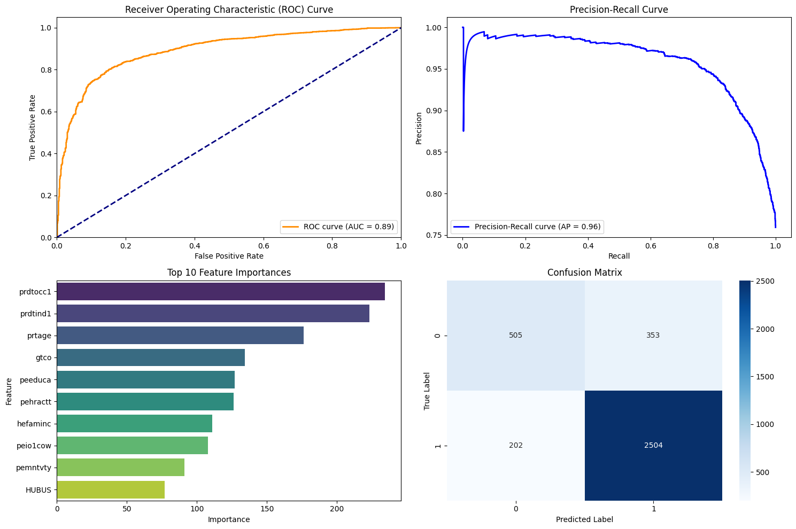

import pandas as pd
import os
from sklearn.model_selection import train_test_split
from sklearn.ensemble import RandomForestClassifier
from sklearn.metrics import classification_report, accuracy_score, confusion_matrix, roc_auc_score
from sklearn.feature_selection import RFECV, SelectKBest, mutual_info_classif
from sklearn.pipeline import Pipeline
from joblib import parallel_backend
import xgboost as xgb
import numpy as np
from statsmodels.stats.outliers_influence import variance_inflation_factor
import matplotlib.pyplot as plt
import seaborn as snsHPS Binary Classification Model
In [2]:
In [3]:
pd.set_option("display.max_columns",None)In [4]:
# Load and prepare data
filtered_df = pd.read_csv("/content/combinedphase4hps.csv")
X = filtered_df.drop(['Unnamed: 0','PWEIGHT', 'HWEIGHT', 'SCRAM', 'TWDAYS','TWDAYS_RESP','AHHLD_NUMPER','AHHLD_NUMKID','ABIRTH_YEAR','AEDUC','ARACE'], axis=1)
y = filtered_df['TWDAYS_RESP']In [5]:
X| CYCLE | EST_ST | REGION | RHISPANIC | AHISPANIC | RRACE | EEDUC | MS | EGENID_BIRTH | AGENID_BIRTH | THHLD_NUMPER | THHLD_NUMKID | THHLD_NUMADLT | ACTVDUTY1 | RECVDVACC | HADCOVIDRV | WRKLOSSRV | ANYWORK | KINDWORK | EXPNS_DIF | CURFOODSUF | FREEFOOD | ANXIOUS | WORRY | INTEREST | DOWN | PRIVHLTH | PUBHLTH | SEEING | HEARING | REMEMBERING | MOBILITY | SELFCARE | UNDERSTAND | TENURE | LIVQTRRV | ENERGY | HSE_TEMP | ENRGY_BILL | INCOME | PRICECHNG | PRICECONCRN | ND_DISPLACE | VETERAN1 | SOCIAL1 | SOCIAL2 | SUPPORT1 | SUPPORT2 | SUPPORT3 | AGE | |
|---|---|---|---|---|---|---|---|---|---|---|---|---|---|---|---|---|---|---|---|---|---|---|---|---|---|---|---|---|---|---|---|---|---|---|---|---|---|---|---|---|---|---|---|---|---|---|---|---|---|---|
| 0 | 1.0 | 36.0 | 1.0 | 1.0 | 2.0 | 1.0 | 4.0 | 1.0 | 2.0 | 2.0 | 2.0 | 0.0 | 2.0 | 1.0 | 1.0 | 1.0 | 2.0 | 1.0 | 4.0 | 3.0 | 1.0 | 2.0 | 1.0 | 1.0 | 1.0 | 1.0 | 1.0 | 3.0 | 1.0 | 1.0 | 1.0 | 2.0 | 1.0 | 1.0 | 2.0 | 2.0 | 4.0 | 4.0 | 4.0 | 6.0 | 1.0 | 3.0 | 2.0 | 1.0 | 1.0 | 4.0 | 4.0 | 2.0 | 1.0 | 55.0 |
| 1 | 1.0 | 34.0 | 1.0 | 1.0 | 2.0 | 1.0 | 6.0 | 5.0 | 2.0 | 2.0 | 2.0 | 0.0 | 2.0 | 1.0 | 1.0 | 1.0 | 2.0 | 1.0 | 2.0 | 2.0 | 1.0 | 2.0 | 2.0 | 1.0 | 2.0 | 2.0 | 1.0 | 2.0 | 2.0 | 1.0 | 2.0 | 1.0 | 1.0 | 1.0 | 3.0 | 2.0 | 2.0 | 4.0 | 4.0 | 4.0 | 4.0 | 2.0 | 2.0 | 1.0 | 2.0 | 3.0 | 3.0 | 2.0 | 1.0 | 28.0 |
| 2 | 1.0 | 36.0 | 1.0 | 2.0 | 2.0 | 1.0 | 5.0 | 1.0 | 1.0 | 2.0 | 4.0 | 2.0 | 2.0 | 1.0 | 1.0 | 1.0 | 2.0 | 1.0 | 1.0 | 2.0 | 2.0 | 2.0 | 2.0 | 1.0 | 2.0 | 2.0 | 1.0 | 2.0 | 3.0 | 1.0 | 1.0 | 2.0 | 1.0 | 1.0 | 2.0 | 2.0 | 4.0 | 4.0 | 4.0 | 6.0 | 1.0 | 1.0 | 2.0 | 1.0 | 5.0 | 3.0 | 2.0 | 2.0 | 2.0 | 49.0 |
| 3 | 1.0 | 34.0 | 1.0 | 1.0 | 2.0 | 1.0 | 7.0 | 1.0 | 1.0 | 2.0 | 4.0 | 2.0 | 2.0 | 1.0 | 1.0 | 1.0 | 1.0 | 1.0 | 2.0 | 1.0 | 1.0 | 2.0 | 1.0 | 1.0 | 1.0 | 1.0 | 1.0 | 2.0 | 1.0 | 1.0 | 1.0 | 1.0 | 1.0 | 1.0 | 2.0 | 2.0 | 4.0 | 4.0 | 4.0 | 8.0 | 1.0 | 3.0 | 2.0 | 1.0 | 2.0 | 4.0 | 4.0 | 2.0 | 1.0 | 50.0 |
| 4 | 1.0 | 36.0 | 1.0 | 1.0 | 2.0 | 1.0 | 6.0 | 1.0 | 1.0 | 2.0 | 2.0 | 0.0 | 2.0 | 1.0 | 1.0 | 1.0 | 2.0 | 1.0 | 2.0 | 2.0 | 2.0 | 2.0 | 1.0 | 1.0 | 1.0 | 1.0 | 1.0 | 2.0 | 2.0 | 1.0 | 1.0 | 1.0 | 1.0 | 1.0 | 3.0 | 6.0 | 4.0 | 4.0 | 4.0 | 7.0 | 1.0 | 1.0 | 2.0 | 1.0 | 2.0 | 4.0 | 3.0 | 2.0 | 2.0 | 30.0 |
| ... | ... | ... | ... | ... | ... | ... | ... | ... | ... | ... | ... | ... | ... | ... | ... | ... | ... | ... | ... | ... | ... | ... | ... | ... | ... | ... | ... | ... | ... | ... | ... | ... | ... | ... | ... | ... | ... | ... | ... | ... | ... | ... | ... | ... | ... | ... | ... | ... | ... | ... |
| 5660 | 9.0 | 34.0 | 1.0 | 1.0 | 2.0 | 3.0 | 5.0 | 1.0 | 1.0 | 2.0 | 4.0 | 2.0 | 2.0 | 1.0 | 1.0 | 1.0 | 2.0 | 1.0 | 4.0 | 2.0 | 1.0 | 2.0 | 1.0 | 1.0 | 1.0 | 1.0 | 1.0 | 2.0 | 1.0 | 1.0 | 1.0 | 1.0 | 1.0 | 1.0 | 2.0 | 2.0 | 4.0 | 4.0 | 4.0 | 8.0 | 1.0 | 1.0 | 2.0 | 1.0 | 2.0 | 3.0 | 1.0 | 2.0 | 4.0 | 49.0 |
| 5661 | 9.0 | 36.0 | 1.0 | 1.0 | 2.0 | 1.0 | 7.0 | 5.0 | 2.0 | 2.0 | 2.0 | 0.0 | 2.0 | 1.0 | 1.0 | 1.0 | 2.0 | 1.0 | 3.0 | 1.0 | 1.0 | 2.0 | 2.0 | 1.0 | 1.0 | 1.0 | 1.0 | 3.0 | 1.0 | 1.0 | 1.0 | 1.0 | 1.0 | 1.0 | 2.0 | 2.0 | 4.0 | 4.0 | 4.0 | 8.0 | 2.0 | 3.0 | 2.0 | 1.0 | 2.0 | 4.0 | 3.0 | 2.0 | 3.0 | 42.0 |
| 5662 | 9.0 | 36.0 | 1.0 | 1.0 | 2.0 | 1.0 | 7.0 | 1.0 | 2.0 | 2.0 | 2.0 | 0.0 | 2.0 | 1.0 | 1.0 | 1.0 | 2.0 | 1.0 | 3.0 | 1.0 | 1.0 | 2.0 | 2.0 | 2.0 | 1.0 | 1.0 | 1.0 | 3.0 | 1.0 | 1.0 | 1.0 | 1.0 | 1.0 | 1.0 | 2.0 | 2.0 | 4.0 | 4.0 | 4.0 | 8.0 | 1.0 | 2.0 | 2.0 | 1.0 | 3.0 | 4.0 | 4.0 | 1.0 | 1.0 | 33.0 |
| 5663 | 9.0 | 34.0 | 1.0 | 1.0 | 2.0 | 1.0 | 5.0 | 1.0 | 2.0 | 2.0 | 2.0 | 0.0 | 2.0 | 1.0 | 1.0 | 1.0 | 2.0 | 1.0 | 2.0 | 3.0 | 2.0 | 2.0 | 2.0 | 2.0 | 2.0 | 1.0 | 1.0 | 2.0 | 1.0 | 1.0 | 1.0 | 1.0 | 1.0 | 1.0 | 1.0 | 2.0 | 3.0 | 2.0 | 3.0 | 4.0 | 1.0 | 1.0 | 2.0 | 1.0 | 1.0 | 4.0 | 4.0 | 2.0 | 1.0 | 55.0 |
| 5664 | 9.0 | 36.0 | 1.0 | 1.0 | 2.0 | 1.0 | 6.0 | 5.0 | 1.0 | 2.0 | 3.0 | 0.0 | 3.0 | 1.0 | 1.0 | 1.0 | 2.0 | 1.0 | 3.0 | 2.0 | 1.0 | 2.0 | 2.0 | 1.0 | 1.0 | 1.0 | 1.0 | 2.0 | 1.0 | 1.0 | 1.0 | 1.0 | 1.0 | 1.0 | 3.0 | 5.0 | 2.0 | 4.0 | 4.0 | 5.0 | 4.0 | 2.0 | 2.0 | 1.0 | 2.0 | 4.0 | 2.0 | 3.0 | 1.0 | 27.0 |
5665 rows × 50 columns
In [6]:
# Convert labels from 1.0/2.0 to 0/1
y = (y == 2.0).astype(int)In [7]:
print("Performing initial feature selection...")
selector = SelectKBest(mutual_info_classif, k=50) # Keep top 50 features
X_reduced = selector.fit_transform(X, y)
selected_features = X.columns[selector.get_support(indices=True)]
print("Top 50 features selected.")Performing initial feature selection...
Top 50 features selected.In [8]:
# Create a DataFrame with reduced features for VIF and further steps
X = pd.DataFrame(X_reduced, columns=selected_features)
def calculate_vif(df):
vif_data = pd.DataFrame()
vif_data["Feature"] = df.columns
vif_data["VIF"] = [variance_inflation_factor(df.values, i) for i in range(df.shape[1])]
return vif_data
# Calculate VIF for all features
print("Performing multicollinearity analysis...")
vif_data = calculate_vif(X)
print("VIF Results:")
print(vif_data)
# Drop features with high VIF (>10)
high_vif_features = vif_data[vif_data["VIF"] > 15]["Feature"].tolist()
print(f"Dropping features with high VIF: {high_vif_features}")
X = X.drop(columns=high_vif_features)Performing multicollinearity analysis.../usr/local/lib/python3.11/dist-packages/statsmodels/regression/linear_model.py:1782: RuntimeWarning: divide by zero encountered in scalar divide
return 1 - self.ssr/self.centered_tss
/usr/local/lib/python3.11/dist-packages/statsmodels/stats/outliers_influence.py:197: RuntimeWarning: divide by zero encountered in scalar divide
vif = 1. / (1. - r_squared_i)VIF Results:
Feature VIF
0 CYCLE 1.017447
1 EST_ST 1.177024
2 REGION 0.000000
3 RHISPANIC 1.042880
4 AHISPANIC 1.004881
5 RRACE 1.078979
6 EEDUC 1.222808
7 MS 1.753173
8 EGENID_BIRTH 1.112458
9 AGENID_BIRTH 1.011530
10 THHLD_NUMPER inf
11 THHLD_NUMKID inf
12 THHLD_NUMADLT inf
13 ACTVDUTY1 0.000000
14 RECVDVACC 1.068647
15 HADCOVIDRV 1.041604
16 WRKLOSSRV 1.048995
17 ANYWORK 0.000000
18 KINDWORK 1.110101
19 EXPNS_DIF 2.112060
20 CURFOODSUF 1.742856
21 FREEFOOD 1.055199
22 ANXIOUS 2.953812
23 WORRY 2.912706
24 INTEREST 2.490250
25 DOWN 2.924415
26 PRIVHLTH 1.254752
27 PUBHLTH 1.224917
28 SEEING 1.174728
29 HEARING 1.139989
30 REMEMBERING 1.370348
31 MOBILITY 1.233866
32 SELFCARE 1.274685
33 UNDERSTAND 1.213315
34 TENURE 1.668701
35 LIVQTRRV 1.898722
36 ENERGY 1.902153
37 HSE_TEMP 1.230725
38 ENRGY_BILL 1.621682
39 INCOME 1.693776
40 PRICECHNG 1.231449
41 PRICECONCRN 1.629774
42 ND_DISPLACE 1.017538
43 VETERAN1 0.000000
44 SOCIAL1 1.384256
45 SOCIAL2 1.625487
46 SUPPORT1 1.204116
47 SUPPORT2 1.235698
48 SUPPORT3 1.128506
49 AGE 1.693441
Dropping features with high VIF: ['THHLD_NUMPER', 'THHLD_NUMKID', 'THHLD_NUMADLT']In [9]:
# Split the data
X_train, X_test, y_train, y_test = train_test_split(X, y, test_size=0.2, random_state=42, stratify=y)In [10]:
# Recursive Feature Elimination
print("Performing Recursive Feature Elimination...")
with parallel_backend('threading'):
rf_model = RandomForestClassifier(random_state=42)
rfecv = RFECV(estimator=rf_model, step=1, cv=5, scoring='accuracy', n_jobs=-1)
rfecv.fit(X_train, y_train)
# Get selected features from RFE
rfe_selected_features = rfecv.support_
X_train_final = X_train.iloc[:, rfe_selected_features]
X_test_final = X_test.iloc[:, rfe_selected_features]Performing Recursive Feature Elimination...In [11]:
# # Outlier Analysis
# print("Performing outlier analysis...")
# z_scores = np.abs((X_train_final - np.mean(X_train_final, axis=0)) / np.std(X_train_final, axis=0))
# threshold = 3
# non_outliers = (z_scores < threshold).all(axis=1)
# outlier_percentage = 100 * (1 - np.sum(non_outliers) / len(non_outliers))
# print(f"Percentage of outliers removed: {outlier_percentage:.2f}%")
# X_train_final = X_train_final[non_outliers]
# y_train = y_train[non_outliers]In [12]:
X_train_final| CYCLE | EST_ST | RRACE | EEDUC | MS | EGENID_BIRTH | HADCOVIDRV | KINDWORK | EXPNS_DIF | CURFOODSUF | ANXIOUS | WORRY | INTEREST | DOWN | PUBHLTH | SEEING | REMEMBERING | TENURE | LIVQTRRV | ENERGY | INCOME | PRICECHNG | PRICECONCRN | SOCIAL1 | SOCIAL2 | SUPPORT1 | SUPPORT2 | SUPPORT3 | AGE | |
|---|---|---|---|---|---|---|---|---|---|---|---|---|---|---|---|---|---|---|---|---|---|---|---|---|---|---|---|---|---|
| 2128 | 4.0 | 34.0 | 1.0 | 6.0 | 1.0 | 1.0 | 1.0 | 4.0 | 1.0 | 1.0 | 1.0 | 1.0 | 1.0 | 1.0 | 1.0 | 1.0 | 1.0 | 1.0 | 2.0 | 4.0 | 6.0 | 2.0 | 4.0 | 1.0 | 4.0 | 4.0 | 4.0 | 1.0 | 66.0 |
| 691 | 2.0 | 36.0 | 1.0 | 6.0 | 1.0 | 1.0 | 1.0 | 4.0 | 1.0 | 1.0 | 2.0 | 1.0 | 1.0 | 1.0 | 3.0 | 1.0 | 1.0 | 1.0 | 3.0 | 4.0 | 8.0 | 2.0 | 4.0 | 2.0 | 4.0 | 1.0 | 1.0 | 1.0 | 61.0 |
| 730 | 2.0 | 36.0 | 1.0 | 7.0 | 1.0 | 2.0 | 1.0 | 2.0 | 2.0 | 1.0 | 2.0 | 2.0 | 2.0 | 1.0 | 1.0 | 2.0 | 1.0 | 1.0 | 2.0 | 4.0 | 6.0 | 4.0 | 3.0 | 3.0 | 3.0 | 2.0 | 2.0 | 1.0 | 49.0 |
| 5443 | 9.0 | 36.0 | 1.0 | 6.0 | 1.0 | 2.0 | 1.0 | 2.0 | 1.0 | 1.0 | 2.0 | 2.0 | 2.0 | 2.0 | 2.0 | 1.0 | 1.0 | 3.0 | 6.0 | 4.0 | 7.0 | 1.0 | 3.0 | 3.0 | 4.0 | 1.0 | 1.0 | 1.0 | 54.0 |
| 1984 | 3.0 | 34.0 | 3.0 | 7.0 | 1.0 | 1.0 | 1.0 | 2.0 | 2.0 | 1.0 | 1.0 | 2.0 | 1.0 | 1.0 | 2.0 | 1.0 | 2.0 | 2.0 | 3.0 | 4.0 | 7.0 | 1.0 | 1.0 | 4.0 | 3.0 | 2.0 | 1.0 | 2.0 | 48.0 |
| ... | ... | ... | ... | ... | ... | ... | ... | ... | ... | ... | ... | ... | ... | ... | ... | ... | ... | ... | ... | ... | ... | ... | ... | ... | ... | ... | ... | ... | ... |
| 4296 | 7.0 | 36.0 | 1.0 | 6.0 | 1.0 | 1.0 | 1.0 | 2.0 | 2.0 | 1.0 | 2.0 | 2.0 | 1.0 | 1.0 | 2.0 | 1.0 | 1.0 | 3.0 | 6.0 | 4.0 | 8.0 | 1.0 | 2.0 | 2.0 | 4.0 | 2.0 | 1.0 | 1.0 | 25.0 |
| 2763 | 5.0 | 34.0 | 1.0 | 6.0 | 1.0 | 2.0 | 1.0 | 2.0 | 4.0 | 2.0 | 3.0 | 3.0 | 2.0 | 2.0 | 2.0 | 2.0 | 3.0 | 3.0 | 6.0 | 4.0 | 7.0 | 1.0 | 1.0 | 2.0 | 3.0 | 2.0 | 1.0 | 1.0 | 34.0 |
| 3593 | 6.0 | 36.0 | 3.0 | 7.0 | 1.0 | 2.0 | 1.0 | 3.0 | 1.0 | 1.0 | 1.0 | 1.0 | 1.0 | 1.0 | 2.0 | 1.0 | 1.0 | 3.0 | 6.0 | 4.0 | 8.0 | 2.0 | 4.0 | 2.0 | 4.0 | 3.0 | 3.0 | 1.0 | 58.0 |
| 3277 | 5.0 | 34.0 | 1.0 | 7.0 | 1.0 | 1.0 | 1.0 | 2.0 | 1.0 | 1.0 | 1.0 | 1.0 | 1.0 | 1.0 | 2.0 | 1.0 | 1.0 | 2.0 | 2.0 | 4.0 | 8.0 | 1.0 | 2.0 | 1.0 | 5.0 | 3.0 | 2.0 | 1.0 | 42.0 |
| 5389 | 9.0 | 34.0 | 1.0 | 4.0 | 1.0 | 1.0 | 1.0 | 2.0 | 1.0 | 1.0 | 1.0 | 1.0 | 1.0 | 1.0 | 2.0 | 1.0 | 1.0 | 1.0 | 2.0 | 4.0 | 8.0 | 2.0 | 3.0 | 1.0 | 5.0 | 4.0 | 1.0 | 1.0 | 39.0 |
4532 rows × 29 columns
In [13]:
# Convert to DMatrix format for XGBoost
dtrain = xgb.DMatrix(X_train_final, label=y_train)
dtest = xgb.DMatrix(X_test_final, label=y_test)
# Define XGBoost parameters
params = {
'objective': 'binary:logistic',
'eval_metric': 'logloss',
'max_depth': 5,
'learning_rate': 0.1,
'n_estimators': 100,
'seed': 42
}
# Cross-validation
print("Performing cross-validation...")
num_round = 100
cv_results = xgb.cv(
params,
dtrain,
num_boost_round=num_round,
nfold=5,
metrics=['auc', 'error'],
early_stopping_rounds=20,
verbose_eval=True
)Performing cross-validation...
[0] train-auc:0.72904+0.00717 train-error:0.13923+0.00246 test-auc:0.63914+0.03029 test-error:0.13923+0.00984
[1] train-auc:0.74121+0.00650 train-error:0.13923+0.00246 test-auc:0.65050+0.03281 test-error:0.13923+0.00984
[2] train-auc:0.74980+0.00536 train-error:0.13923+0.00246 test-auc:0.65789+0.03393 test-error:0.13923+0.00984
[3] train-auc:0.75701+0.00727 train-error:0.13923+0.00246 test-auc:0.65717+0.03223 test-error:0.13923+0.00984
[4] train-auc:0.76338+0.00684 train-error:0.13923+0.00246 test-auc:0.66330+0.03274 test-error:0.13923+0.00984
[5] train-auc:0.76952+0.00707 train-error:0.13923+0.00246 test-auc:0.66412+0.03152 test-error:0.13923+0.00984
[6] train-auc:0.77329+0.00713 train-error:0.13912+0.00241 test-auc:0.66570+0.02975 test-error:0.13923+0.00984
[7] train-auc:0.77670+0.00816 train-error:0.13885+0.00223 test-auc:0.66564+0.02755 test-error:0.13923+0.00984
[8] train-auc:0.78105+0.00848 train-error:0.13857+0.00220 test-auc:0.66675+0.02709 test-error:0.13945+0.00967
[9] train-auc:0.78542+0.00873 train-error:0.13813+0.00239 test-auc:0.66726+0.02838 test-error:0.13945+0.00967/usr/local/lib/python3.11/dist-packages/xgboost/core.py:158: UserWarning: [04:00:35] WARNING: /workspace/src/learner.cc:740:
Parameters: { "n_estimators" } are not used.
warnings.warn(smsg, UserWarning)[10] train-auc:0.79012+0.00617 train-error:0.13758+0.00225 test-auc:0.66581+0.02624 test-error:0.13945+0.00967
[11] train-auc:0.79638+0.00740 train-error:0.13692+0.00228 test-auc:0.66725+0.02750 test-error:0.13945+0.00967
[12] train-auc:0.79997+0.00864 train-error:0.13653+0.00261 test-auc:0.66868+0.02840 test-error:0.13967+0.00952
[13] train-auc:0.80394+0.00838 train-error:0.13609+0.00258 test-auc:0.66558+0.02804 test-error:0.13967+0.00918
[14] train-auc:0.80669+0.00852 train-error:0.13576+0.00253 test-auc:0.66478+0.02999 test-error:0.13967+0.00918
[15] train-auc:0.81104+0.00836 train-error:0.13537+0.00250 test-auc:0.66511+0.03062 test-error:0.13945+0.00936
[16] train-auc:0.81227+0.00863 train-error:0.13482+0.00277 test-auc:0.66637+0.03134 test-error:0.13923+0.00946
[17] train-auc:0.81605+0.00882 train-error:0.13438+0.00338 test-auc:0.66839+0.03072 test-error:0.13945+0.00931
[18] train-auc:0.81879+0.00957 train-error:0.13361+0.00334 test-auc:0.66744+0.02975 test-error:0.13967+0.00858
[19] train-auc:0.82114+0.01037 train-error:0.13305+0.00338 test-auc:0.66828+0.03086 test-error:0.13945+0.00933
[20] train-auc:0.82445+0.00874 train-error:0.13245+0.00387 test-auc:0.66960+0.02902 test-error:0.13901+0.00908
[21] train-auc:0.82624+0.00880 train-error:0.13162+0.00414 test-auc:0.66994+0.02746 test-error:0.13879+0.00901
[22] train-auc:0.82979+0.00980 train-error:0.13112+0.00404 test-auc:0.66941+0.02966 test-error:0.13879+0.00880
[23] train-auc:0.83073+0.00946 train-error:0.13041+0.00371 test-auc:0.67039+0.02904 test-error:0.13857+0.00841
[24] train-auc:0.83414+0.01029 train-error:0.12991+0.00358 test-auc:0.66796+0.03002 test-error:0.13857+0.00841
[25] train-auc:0.83735+0.01163 train-error:0.12925+0.00328 test-auc:0.66852+0.02923 test-error:0.13857+0.00841
[26] train-auc:0.84148+0.01130 train-error:0.12870+0.00330 test-auc:0.66800+0.03058 test-error:0.13812+0.00874
[27] train-auc:0.84529+0.01061 train-error:0.12836+0.00327 test-auc:0.66701+0.02953 test-error:0.13790+0.00887
[28] train-auc:0.84720+0.01062 train-error:0.12770+0.00327 test-auc:0.66731+0.02853 test-error:0.13812+0.00874
[29] train-auc:0.84962+0.01130 train-error:0.12715+0.00349 test-auc:0.66684+0.02826 test-error:0.13813+0.00861
[30] train-auc:0.85275+0.01050 train-error:0.12610+0.00355 test-auc:0.66614+0.02878 test-error:0.13813+0.00861
[31] train-auc:0.85416+0.01075 train-error:0.12572+0.00319 test-auc:0.66590+0.02810 test-error:0.13790+0.00871
[32] train-auc:0.85600+0.01087 train-error:0.12483+0.00317 test-auc:0.66428+0.02854 test-error:0.13813+0.00861
[33] train-auc:0.85837+0.01135 train-error:0.12450+0.00339 test-auc:0.66299+0.02943 test-error:0.13790+0.00871
[34] train-auc:0.86169+0.00901 train-error:0.12401+0.00302 test-auc:0.66171+0.02896 test-error:0.13790+0.00851
[35] train-auc:0.86323+0.00908 train-error:0.12346+0.00322 test-auc:0.66093+0.02910 test-error:0.13835+0.00821
[36] train-auc:0.86474+0.00881 train-error:0.12329+0.00319 test-auc:0.66113+0.02873 test-error:0.13857+0.00810
[37] train-auc:0.86716+0.00913 train-error:0.12257+0.00315 test-auc:0.66113+0.02934 test-error:0.13857+0.00810
[38] train-auc:0.86932+0.00907 train-error:0.12202+0.00332 test-auc:0.66081+0.02915 test-error:0.13835+0.00824
[39] train-auc:0.87094+0.00852 train-error:0.12180+0.00307 test-auc:0.66066+0.03035 test-error:0.13835+0.00824
[40] train-auc:0.87232+0.00831 train-error:0.12119+0.00273 test-auc:0.65967+0.02967 test-error:0.13857+0.00810
[41] train-auc:0.87502+0.00781 train-error:0.12048+0.00315 test-auc:0.65826+0.02838 test-error:0.13857+0.00810
[42] train-auc:0.87668+0.00808 train-error:0.11981+0.00271 test-auc:0.65678+0.02758 test-error:0.13879+0.00809
[43] train-auc:0.87866+0.00812 train-error:0.11970+0.00257 test-auc:0.65662+0.02838 test-error:0.13901+0.00810
[44] train-auc:0.88010+0.00810 train-error:0.11904+0.00251 test-auc:0.65730+0.02788 test-error:0.13901+0.00810
[45] train-auc:0.88106+0.00816 train-error:0.11860+0.00274 test-auc:0.65704+0.02792 test-error:0.13923+0.00852
[46] train-auc:0.88228+0.00824 train-error:0.11766+0.00298 test-auc:0.65611+0.02854 test-error:0.13945+0.00841In [14]:
# Print CV results
print("\nCross-validation results:")
print(f"Best AUC: {cv_results['test-auc-mean'].max():.4f} (+/- {cv_results['test-auc-std'].min():.4f})")
print(f"Best Error: {cv_results['test-error-mean'].min():.4f} (+/- {cv_results['test-error-std'].min():.4f})")
# Train final model
print("\nTraining final model...")
final_model = xgb.train(params, dtrain, num_round)
# Make predictions
y_pred = final_model.predict(dtest)
y_pred_binary = (y_pred > 0.5).astype(int)
# Calculate and print metrics
print("\nModel Performance Metrics:")
print("\nClassification Report:")
print(classification_report(y_test, y_pred_binary))
print("\nConfusion Matrix:")
conf_matrix = confusion_matrix(y_test, y_pred_binary)
print(conf_matrix)
print(f"\nROC AUC Score: {roc_auc_score(y_test, y_pred):.4f}")
# Feature importance analysis
importance = final_model.get_score(importance_type='weight')
importance_df = pd.DataFrame(list(importance.items()), columns=['Feature', 'Importance'])
importance_df = importance_df.sort_values(by='Importance', ascending=False)
print("\nTop 10 Most Important Features:")
print(importance_df)
# Plot feature importances
plt.figure(figsize=(12, 6))
sns.barplot(x='Importance', y='Feature', data=importance_df.head(10), palette='viridis')
plt.title('Top 10 Feature Importances')
plt.xlabel('Importance')
plt.ylabel('Feature')
plt.tight_layout()
plt.show()
# Plot confusion matrix
plt.figure(figsize=(8, 6))
sns.heatmap(conf_matrix, annot=True, fmt='d', cmap='Blues')
plt.title('Confusion Matrix')
plt.ylabel('True Label')
plt.xlabel('Predicted Label')
plt.tight_layout()
plt.show()
Cross-validation results:
Best AUC: 0.6704 (+/- 0.0262)
Best Error: 0.1379 (+/- 0.0084)
Training final model.../usr/local/lib/python3.11/dist-packages/xgboost/core.py:158: UserWarning: [04:07:14] WARNING: /workspace/src/learner.cc:740:
Parameters: { "n_estimators" } are not used.
warnings.warn(smsg, UserWarning)
Model Performance Metrics:
Classification Report:
precision recall f1-score support
0 0.86 0.99 0.92 975
1 0.31 0.03 0.06 158
accuracy 0.86 1133
macro avg 0.59 0.51 0.49 1133
weighted avg 0.79 0.86 0.80 1133
Confusion Matrix:
[[964 11]
[153 5]]
ROC AUC Score: 0.6858
Top 10 Most Important Features:
Feature Importance
28 AGE 332.0
0 CYCLE 138.0
7 KINDWORK 136.0
20 INCOME 100.0
3 EEDUC 96.0
18 LIVQTRRV 82.0
25 SUPPORT1 77.0
27 SUPPORT3 76.0
24 SOCIAL2 75.0
8 EXPNS_DIF 72.0
5 EGENID_BIRTH 71.0
22 PRICECONCRN 63.0
9 CURFOODSUF 57.0
4 MS 56.0
19 ENERGY 56.0
23 SOCIAL1 55.0
26 SUPPORT2 54.0
10 ANXIOUS 53.0
15 SEEING 50.0
21 PRICECHNG 44.0
1 EST_ST 38.0
14 PUBHLTH 37.0
6 HADCOVIDRV 36.0
13 DOWN 35.0
16 REMEMBERING 33.0
2 RRACE 31.0
17 TENURE 30.0
11 WORRY 29.0
12 INTEREST 17.0FutureWarning:
Passing `palette` without assigning `hue` is deprecated and will be removed in v0.14.0. Assign the `y` variable to `hue` and set `legend=False` for the same effect.
sns.barplot(x='Importance', y='Feature', data=importance_df.head(10), palette='viridis')In [15]:
import statsmodels.api as sm
import shap
print("\nFitting Probit model for effect sizes and p-values...")
# Add constant for statsmodels
X_train_probit = sm.add_constant(X_train_final)
probit_model = sm.Probit(y_train, X_train_probit)
probit_results = probit_model.fit(disp=0) # disp=0 -> no iteration details
print("\nProbit Model Summary:")
print(probit_results.summary())
# If you want to see marginal effects (average partial effects), uncomment below:
me = probit_results.get_margeff()
print("\nMarginal Effects:")
print(me.summary())
Fitting Probit model for effect sizes and p-values...
Probit Model Summary:
Probit Regression Results
==============================================================================
Dep. Variable: TWDAYS_RESP No. Observations: 4532
Model: Probit Df Residuals: 4502
Method: MLE Df Model: 29
Date: Fri, 31 Jan 2025 Pseudo R-squ.: 0.05405
Time: 04:00:44 Log-Likelihood: -1730.1
converged: True LL-Null: -1829.0
Covariance Type: nonrobust LLR p-value: 4.968e-27
================================================================================
coef std err z P>|z| [0.025 0.975]
--------------------------------------------------------------------------------
const -1.6437 1.003 -1.639 0.101 -3.609 0.322
CYCLE -0.0102 0.010 -1.053 0.293 -0.029 0.009
EST_ST 0.0590 0.026 2.302 0.021 0.009 0.109
RRACE -0.0138 0.029 -0.475 0.635 -0.071 0.043
EEDUC -0.1432 0.023 -6.185 0.000 -0.189 -0.098
MS -0.0579 0.017 -3.412 0.001 -0.091 -0.025
EGENID_BIRTH 0.0153 0.050 0.307 0.759 -0.082 0.113
HADCOVIDRV -0.0206 0.057 -0.362 0.717 -0.132 0.091
KINDWORK -0.0680 0.029 -2.381 0.017 -0.124 -0.012
EXPNS_DIF 0.0525 0.037 1.434 0.152 -0.019 0.124
CURFOODSUF 0.0481 0.060 0.799 0.425 -0.070 0.166
ANXIOUS -0.1246 0.050 -2.516 0.012 -0.222 -0.028
WORRY 0.0650 0.053 1.220 0.222 -0.039 0.169
INTEREST -0.0053 0.055 -0.097 0.923 -0.114 0.103
DOWN 0.1047 0.059 1.767 0.077 -0.011 0.221
PUBHLTH -0.0555 0.053 -1.043 0.297 -0.160 0.049
SEEING 0.0497 0.055 0.901 0.368 -0.058 0.158
REMEMBERING -0.0178 0.058 -0.307 0.759 -0.131 0.096
TENURE 0.0076 0.046 0.165 0.869 -0.083 0.098
LIVQTRRV -0.0896 0.018 -4.977 0.000 -0.125 -0.054
ENERGY 0.0316 0.039 0.808 0.419 -0.045 0.108
INCOME -0.0499 0.018 -2.846 0.004 -0.084 -0.016
PRICECHNG -0.0007 0.031 -0.021 0.983 -0.062 0.061
PRICECONCRN 0.0165 0.030 0.553 0.580 -0.042 0.075
SOCIAL1 -0.0213 0.027 -0.775 0.438 -0.075 0.032
SOCIAL2 0.1105 0.033 3.343 0.001 0.046 0.175
SUPPORT1 -0.0149 0.024 -0.616 0.538 -0.062 0.032
SUPPORT2 -0.0592 0.032 -1.824 0.068 -0.123 0.004
SUPPORT3 0.0615 0.022 2.771 0.006 0.018 0.105
AGE -0.0058 0.002 -2.494 0.013 -0.010 -0.001
================================================================================
Marginal Effects:
Probit Marginal Effects
=====================================
Dep. Variable: TWDAYS_RESP
Method: dydx
At: overall
================================================================================
dy/dx std err z P>|z| [0.025 0.975]
--------------------------------------------------------------------------------
CYCLE -0.0021 0.002 -1.053 0.292 -0.006 0.002
EST_ST 0.0124 0.005 2.303 0.021 0.002 0.023
RRACE -0.0029 0.006 -0.475 0.635 -0.015 0.009
EEDUC -0.0301 0.005 -6.217 0.000 -0.040 -0.021
MS -0.0122 0.004 -3.416 0.001 -0.019 -0.005
EGENID_BIRTH 0.0032 0.010 0.307 0.759 -0.017 0.024
HADCOVIDRV -0.0043 0.012 -0.362 0.717 -0.028 0.019
KINDWORK -0.0143 0.006 -2.383 0.017 -0.026 -0.003
EXPNS_DIF 0.0110 0.008 1.434 0.151 -0.004 0.026
CURFOODSUF 0.0101 0.013 0.799 0.425 -0.015 0.035
ANXIOUS -0.0262 0.010 -2.518 0.012 -0.047 -0.006
WORRY 0.0136 0.011 1.221 0.222 -0.008 0.036
INTEREST -0.0011 0.012 -0.097 0.923 -0.024 0.022
DOWN 0.0220 0.012 1.767 0.077 -0.002 0.046
PUBHLTH -0.0117 0.011 -1.043 0.297 -0.034 0.010
SEEING 0.0104 0.012 0.901 0.368 -0.012 0.033
REMEMBERING -0.0037 0.012 -0.307 0.759 -0.028 0.020
TENURE 0.0016 0.010 0.165 0.869 -0.017 0.021
LIVQTRRV -0.0188 0.004 -4.987 0.000 -0.026 -0.011
ENERGY 0.0066 0.008 0.808 0.419 -0.009 0.023
INCOME -0.0105 0.004 -2.847 0.004 -0.018 -0.003
PRICECHNG -0.0001 0.007 -0.021 0.983 -0.013 0.013
PRICECONCRN 0.0035 0.006 0.553 0.580 -0.009 0.016
SOCIAL1 -0.0045 0.006 -0.775 0.438 -0.016 0.007
SOCIAL2 0.0232 0.007 3.348 0.001 0.010 0.037
SUPPORT1 -0.0031 0.005 -0.616 0.538 -0.013 0.007
SUPPORT2 -0.0124 0.007 -1.825 0.068 -0.026 0.001
SUPPORT3 0.0129 0.005 2.773 0.006 0.004 0.022
AGE -0.0012 0.000 -2.495 0.013 -0.002 -0.000
================================================================================In [16]:
print("\nCalculating and plotting SHAP values for XGBoost model...")
explainer = shap.TreeExplainer(final_model)
shap_values = explainer.shap_values(X_test_final)
# --- SHAP Beeswarm (summary) Plot ---
print("Generating SHAP Beeswarm plot...")
shap.summary_plot(shap_values, X_test_final)
# --- SHAP Bar Plot of Mean Absolute SHAP Values ---
print("Generating SHAP Bar plot...")
shap.summary_plot(shap_values, X_test_final, plot_type="bar")
# (Optional) If you want to examine a single observation or more advanced plots:
# idx_to_explain = 0 # index in X_test_final
# shap.force_plot(
# explainer.expected_value,
# shap_values[idx_to_explain,:],
# X_test_final.iloc[idx_to_explain,:],
# matplotlib=True
# )
Calculating and plotting SHAP values for XGBoost model...
Generating SHAP Beeswarm plot...Generating SHAP Bar plot...CPS Binary Classification Model
In [1]:
import pandas as pd
import os
from sklearn.model_selection import train_test_split
from sklearn.ensemble import RandomForestClassifier
from sklearn.metrics import classification_report, accuracy_score, confusion_matrix, roc_auc_score
from sklearn.feature_selection import RFECV, SelectKBest, mutual_info_classif
from sklearn.pipeline import Pipeline
from joblib import parallel_backend
import xgboost as xgb
import numpy as np
from statsmodels.stats.outliers_influence import variance_inflation_factor
import matplotlib.pyplot as plt
import seaborn as sns
from sklearn.preprocessing import LabelEncoderIn [2]:
# Load and prepare data
filtered_df = pd.read_csv("filtered_df.csv")
filtered_df = filtered_df[(filtered_df['gestfips']==34) | (filtered_df['gestfips']==36)]In [3]:
X = filtered_df[['hehousut','hetelhhd','hetelavl','hefaminc','hrnumhou','hrhtype','HUBUS','gereg','gediv','gestfips','gtcbsa','gtco','gtcbsast','gtmetsta','gtindvpc','gtcbsasz','gtcsa','perrp','prtage','pemaritl','pesex','peeduca','ptdtrace','prdthsp','PUCHINHH','prfamrel','prfamtyp','pehspnon','penatvty','pemntvty','pefntvty','prcitshp','prinuyer','PUWK','pemjot','pemjnum','pehruslt','pehractt','peio1cow','prdtind1','prdtocc1','pternwa','ptwk','prchld','prnmchld']]
y = filtered_df['pttlwk']In [4]:
X| hehousut | hetelhhd | hetelavl | hefaminc | hrnumhou | hrhtype | HUBUS | gereg | gediv | gestfips | ... | pemjnum | pehruslt | pehractt | peio1cow | prdtind1 | prdtocc1 | pternwa | ptwk | prchld | prnmchld | |
|---|---|---|---|---|---|---|---|---|---|---|---|---|---|---|---|---|---|---|---|---|---|
| 651 | 1 | 1 | -1 | 14 | 2 | 1 | 1 | 1 | 2 | 34 | ... | -1.0 | 40.0 | 48.0 | 4.0 | 25.0 | 21.0 | -1.0 | 0 | 0.0 | 0.0 |
| 652 | 1 | 1 | -1 | 14 | 2 | 1 | 1 | 1 | 2 | 34 | ... | -1.0 | 40.0 | 40.0 | 2.0 | 51.0 | 14.0 | -1.0 | 0 | 0.0 | 0.0 |
| 653 | 1 | 1 | -1 | 11 | 2 | 6 | 2 | 1 | 2 | 34 | ... | -1.0 | 40.0 | 40.0 | 4.0 | 14.0 | 22.0 | -1.0 | 0 | 0.0 | 0.0 |
| 654 | 1 | 1 | -1 | 11 | 2 | 6 | 2 | 1 | 2 | 34 | ... | -1.0 | 40.0 | 40.0 | 4.0 | 22.0 | 17.0 | -1.0 | 0 | 0.0 | 0.0 |
| 655 | 1 | 2 | 2 | 12 | 2 | 4 | 2 | 1 | 2 | 34 | ... | -1.0 | 20.0 | 20.0 | 7.0 | 36.0 | 7.0 | -1.0 | 0 | 0.0 | 0.0 |
| ... | ... | ... | ... | ... | ... | ... | ... | ... | ... | ... | ... | ... | ... | ... | ... | ... | ... | ... | ... | ... | ... |
| 318282 | 1 | 1 | 2 | 10 | 2 | 4 | 2 | 1 | 2 | 36 | ... | -1.0 | 40.0 | 40.0 | 4.0 | 42.0 | 11.0 | -1.0 | 0 | 0.0 | 0.0 |
| 318283 | 1 | 1 | -1 | 15 | 1 | 6 | 2 | 1 | 2 | 36 | ... | -1.0 | 40.0 | 40.0 | 1.0 | 51.0 | 20.0 | -1.0 | 0 | 0.0 | 0.0 |
| 318284 | 1 | 1 | -1 | 14 | 2 | 1 | 1 | 1 | 2 | 36 | ... | -1.0 | 50.0 | 50.0 | 4.0 | 40.0 | 13.0 | -1.0 | 0 | 0.0 | 0.0 |
| 318399 | 1 | 1 | -1 | 16 | 3 | 4 | 2 | 1 | 2 | 34 | ... | -1.0 | 20.0 | 20.0 | 4.0 | 22.0 | 16.0 | -1.0 | 0 | 0.0 | 0.0 |
| 318400 | 1 | 1 | -1 | 16 | 3 | 4 | 2 | 1 | 2 | 34 | ... | -1.0 | 40.0 | 40.0 | 4.0 | 38.0 | 22.0 | -1.0 | 0 | 4.0 | 1.0 |
17819 rows × 45 columns
In [5]:
# Convert labels from 1.0/2.0 to 0/1
y = (y == 2.0).astype(int)In [6]:
y.value_counts()| count | |
|---|---|
| pttlwk | |
| 1 | 13529 |
| 0 | 4290 |
In [7]:
# # Initialize label encoders dictionary
# encoders = {}
# # Label encode all feature columns
# for column in X.columns:
# encoders[column] = LabelEncoder()
# X[column] = encoders[column].fit_transform(X[column])
# # Label encode target variable
# target_encoder = LabelEncoder()
# y = target_encoder.fit_transform(y)
# print("Shape of X after encoding:", X.shape)
# print("Shape of y after encoding:", y.shape)
# print("\nUnique values in target variable:", np.unique(y))In [8]:
# print("Performing initial feature selection...")
# selector = SelectKBest(mutual_info_classif, k=100) # Keep top 50 features
# X_reduced = selector.fit_transform(X, y)
# selected_features = X.columns[selector.get_support(indices=True)]
# print("Top 50 features selected.")In [9]:
# Create a DataFrame with reduced features for VIF and further steps
# X = pd.DataFrame(X_reduced, columns=selected_features)
def calculate_vif(df):
vif_data = pd.DataFrame()
vif_data["Feature"] = df.columns
vif_data["VIF"] = [variance_inflation_factor(df.values, i) for i in range(df.shape[1])]
return vif_data
# Calculate VIF for all features
print("Performing multicollinearity analysis...")
vif_data = calculate_vif(X)
print("VIF Results:")
print(vif_data)
# Drop features with high VIF (>10)
high_vif_features = vif_data[vif_data["VIF"] > 10]["Feature"].tolist()
print(f"Dropping features with high VIF: {high_vif_features}")
X = X.drop(columns=high_vif_features)Performing multicollinearity analysis.../usr/local/lib/python3.11/dist-packages/statsmodels/regression/linear_model.py:1782: RuntimeWarning: divide by zero encountered in scalar divide
return 1 - self.ssr/self.centered_tssVIF Results:
Feature VIF
0 hehousut 1.046027
1 hetelhhd 2.254292
2 hetelavl 2.282600
3 hefaminc 1.434420
4 hrnumhou 2.452866
5 hrhtype 4.732866
6 HUBUS 1.156651
7 gereg 0.000000
8 gediv 0.000000
9 gestfips 2.652757
10 gtcbsa 2.183617
11 gtco 2.202980
12 gtcbsast 4.391335
13 gtmetsta 2.231556
14 gtindvpc 2.651372
15 gtcbsasz 9.794757
16 gtcsa 5.458005
17 perrp 5.387685
18 prtage 1.678536
19 pemaritl 3.464919
20 pesex 1.148676
21 peeduca 1.524835
22 ptdtrace 1.271114
23 prdthsp 5.773714
24 PUCHINHH 1.015834
25 prfamrel 6.719113
26 prfamtyp 4.662360
27 pehspnon 5.659180
28 penatvty 7.903467
29 pemntvty 8.318010
30 pefntvty 7.946751
31 prcitshp 12.204819
32 prinuyer 8.446316
33 PUWK 1.015886
34 pemjot 83.410023
35 pemjnum 83.510317
36 pehruslt 2.022003
37 pehractt 2.050188
38 peio1cow 1.171097
39 prdtind1 1.193875
40 prdtocc1 1.359964
41 pternwa 3.260463
42 ptwk 3.171225
43 prchld 4.825561
44 prnmchld 5.667953
Dropping features with high VIF: ['prcitshp', 'pemjot', 'pemjnum']In [10]:
# Split the data
X_train, X_test, y_train, y_test = train_test_split(X, y, test_size=0.2, random_state=42, stratify=y)In [11]:
# Recursive Feature Elimination
print("Performing Recursive Feature Elimination...")
with parallel_backend('threading'):
rf_model = RandomForestClassifier(random_state=42)
rfecv = RFECV(estimator=rf_model, step=1, cv=5, scoring='accuracy', n_jobs=-1)
rfecv.fit(X_train, y_train)
# Get selected features from RFE
rfe_selected_features = rfecv.support_
X_train_final = X_train.iloc[:, rfe_selected_features]
X_test_final = X_test.iloc[:, rfe_selected_features]Performing Recursive Feature Elimination...In [12]:
# # Outlier Analysis
# print("Performing outlier analysis...")
# z_scores = np.abs((X_train_final - np.mean(X_train_final, axis=0)) / np.std(X_train_final, axis=0))
# threshold = 3
# non_outliers = (z_scores < threshold).all(axis=1)
# outlier_percentage = 100 * (1 - np.sum(non_outliers) / len(non_outliers))
# print(f"Percentage of outliers removed: {outlier_percentage:.2f}%")
# # Align indices before filtering
# X_train_final = X_train_final[non_outliers].reset_index(drop=True)
# # Use the index from X_train_final before reset to filter y_train
# y_train = y_train[X_train_final.index[non_outliers]].reset_index(drop=True)In [13]:
X_train_final| hefaminc | hrnumhou | hrhtype | HUBUS | gestfips | gtcbsa | gtco | gtcbsast | gtindvpc | gtcbsasz | ... | pefntvty | prinuyer | pehruslt | pehractt | peio1cow | prdtind1 | prdtocc1 | pternwa | prchld | prnmchld | |
|---|---|---|---|---|---|---|---|---|---|---|---|---|---|---|---|---|---|---|---|---|---|
| 143322 | 9 | 2 | 6 | 2 | 36 | 15380 | 0 | 1 | 1 | 5 | ... | 57.0 | 0.0 | 30.0 | 30.0 | 4.0 | 46.0 | 13.0 | -1.0 | 0.0 | 0.0 |
| 318280 | 15 | 2 | 1 | 2 | 36 | 10580 | 0 | 1 | 0 | 4 | ... | 117.0 | 0.0 | 40.0 | 40.0 | 4.0 | 19.0 | 22.0 | -1.0 | 0.0 | 0.0 |
| 316593 | 16 | 9 | 1 | 2 | 36 | 35620 | 81 | 1 | 1 | 7 | ... | 333.0 | 0.0 | 25.0 | 25.0 | 1.0 | 51.0 | 12.0 | -1.0 | 0.0 | 0.0 |
| 78397 | 11 | 4 | 1 | 2 | 34 | 0 | 0 | 4 | 0 | 0 | ... | 57.0 | 0.0 | 40.0 | 40.0 | 3.0 | 40.0 | 22.0 | -1.0 | 0.0 | 0.0 |
| 92298 | 15 | 2 | 1 | 2 | 34 | 45940 | 21 | 4 | 0 | 3 | ... | 57.0 | 0.0 | 40.0 | 1.0 | 4.0 | 19.0 | 17.0 | -1.0 | 0.0 | 0.0 |
| ... | ... | ... | ... | ... | ... | ... | ... | ... | ... | ... | ... | ... | ... | ... | ... | ... | ... | ... | ... | ... | ... |
| 143188 | 16 | 4 | 1 | 2 | 34 | 35620 | 13 | 2 | 0 | 7 | ... | 57.0 | 0.0 | 40.0 | 40.0 | 1.0 | 51.0 | 7.0 | -1.0 | 5.0 | 2.0 |
| 164531 | 11 | 5 | 3 | 2 | 36 | 35620 | 5 | 1 | 1 | 7 | ... | 328.0 | 24.0 | 25.0 | 25.0 | 3.0 | 51.0 | 12.0 | -1.0 | 0.0 | 0.0 |
| 44316 | 13 | 1 | 6 | 2 | 36 | 0 | 0 | 3 | 0 | 0 | ... | 57.0 | 0.0 | 40.0 | 40.0 | 4.0 | 42.0 | 21.0 | 72000.0 | 0.0 | 0.0 |
| 297427 | 12 | 3 | 1 | 2 | 34 | 35620 | 13 | 2 | 0 | 7 | ... | 370.0 | 28.0 | 60.0 | 60.0 | 7.0 | 36.0 | 9.0 | -1.0 | 3.0 | 1.0 |
| 36780 | 16 | 2 | 1 | 2 | 36 | 15380 | 0 | 2 | 0 | 5 | ... | 57.0 | 0.0 | 20.0 | 20.0 | 4.0 | 29.0 | 20.0 | -1.0 | 0.0 | 0.0 |
14255 rows × 30 columns
In [14]:
# Convert to DMatrix format for XGBoost
dtrain = xgb.DMatrix(X_train_final, label=y_train)
dtest = xgb.DMatrix(X_test_final, label=y_test)
# Define XGBoost parameters
params = {
'objective': 'binary:logistic',
'eval_metric': 'logloss',
'max_depth': 5,
'learning_rate': 0.1,
'n_estimators': 100,
'seed': 42
}
# Cross-validation
print("Performing cross-validation...")
num_round = 100
cv_results = xgb.cv(
params,
dtrain,
num_boost_round=num_round,
nfold=5,
metrics=['auc', 'error'],
early_stopping_rounds=20,
verbose_eval=True
)Performing cross-validation...
[0] train-auc:0.84550+0.00162 train-error:0.24076+0.00117 test-auc:0.83084+0.00405 test-error:0.24076+0.00468
[1] train-auc:0.85108+0.00091 train-error:0.24076+0.00117 test-auc:0.83766+0.00555 test-error:0.24076+0.00468
[2] train-auc:0.85450+0.00175 train-error:0.24076+0.00117 test-auc:0.84107+0.00493 test-error:0.24076+0.00468
[3] train-auc:0.85600+0.00190 train-error:0.24076+0.00117 test-auc:0.84246+0.00456 test-error:0.24076+0.00468
[4] train-auc:0.85822+0.00136 train-error:0.24076+0.00117 test-auc:0.84453+0.00454 test-error:0.24076+0.00468/usr/local/lib/python3.11/dist-packages/xgboost/core.py:158: UserWarning: [05:33:21] WARNING: /workspace/src/learner.cc:740:
Parameters: { "n_estimators" } are not used.
warnings.warn(smsg, UserWarning)[5] train-auc:0.86179+0.00331 train-error:0.24046+0.00104 test-auc:0.84622+0.00409 test-error:0.24062+0.00477
[6] train-auc:0.86704+0.00245 train-error:0.22038+0.01036 test-auc:0.85064+0.00415 test-error:0.22448+0.00933
[7] train-auc:0.86990+0.00301 train-error:0.20051+0.00366 test-auc:0.85308+0.00421 test-error:0.20744+0.00496
[8] train-auc:0.87272+0.00163 train-error:0.18886+0.00164 test-auc:0.85495+0.00438 test-error:0.19551+0.00420
[9] train-auc:0.87495+0.00115 train-error:0.18346+0.00179 test-auc:0.85689+0.00411 test-error:0.19074+0.00270
[10] train-auc:0.87717+0.00113 train-error:0.18143+0.00199 test-auc:0.85855+0.00410 test-error:0.18871+0.00339
[11] train-auc:0.87898+0.00138 train-error:0.17866+0.00137 test-auc:0.86038+0.00398 test-error:0.18702+0.00132
[12] train-auc:0.88076+0.00112 train-error:0.17608+0.00184 test-auc:0.86169+0.00396 test-error:0.18471+0.00357
[13] train-auc:0.88210+0.00097 train-error:0.17420+0.00198 test-auc:0.86243+0.00393 test-error:0.18302+0.00244
[14] train-auc:0.88343+0.00097 train-error:0.17220+0.00197 test-auc:0.86327+0.00391 test-error:0.18281+0.00254
[15] train-auc:0.88504+0.00105 train-error:0.17092+0.00188 test-auc:0.86466+0.00360 test-error:0.18141+0.00310
[16] train-auc:0.88660+0.00101 train-error:0.16984+0.00225 test-auc:0.86528+0.00350 test-error:0.18064+0.00284
[17] train-auc:0.88781+0.00117 train-error:0.16819+0.00211 test-auc:0.86620+0.00336 test-error:0.18085+0.00317
[18] train-auc:0.88933+0.00129 train-error:0.16654+0.00178 test-auc:0.86720+0.00352 test-error:0.17994+0.00236
[19] train-auc:0.89063+0.00128 train-error:0.16519+0.00214 test-auc:0.86812+0.00367 test-error:0.17952+0.00156
[20] train-auc:0.89191+0.00111 train-error:0.16373+0.00224 test-auc:0.86901+0.00388 test-error:0.17790+0.00179
[21] train-auc:0.89321+0.00127 train-error:0.16242+0.00249 test-auc:0.86994+0.00382 test-error:0.17608+0.00234
[22] train-auc:0.89441+0.00090 train-error:0.16122+0.00216 test-auc:0.87096+0.00396 test-error:0.17454+0.00127
[23] train-auc:0.89540+0.00084 train-error:0.15982+0.00222 test-auc:0.87171+0.00389 test-error:0.17355+0.00153
[24] train-auc:0.89649+0.00108 train-error:0.15805+0.00215 test-auc:0.87229+0.00390 test-error:0.17257+0.00222
[25] train-auc:0.89755+0.00107 train-error:0.15724+0.00207 test-auc:0.87280+0.00417 test-error:0.17264+0.00185
[26] train-auc:0.89841+0.00106 train-error:0.15617+0.00233 test-auc:0.87343+0.00418 test-error:0.17166+0.00228
[27] train-auc:0.89925+0.00103 train-error:0.15582+0.00247 test-auc:0.87383+0.00411 test-error:0.17089+0.00294
[28] train-auc:0.89986+0.00095 train-error:0.15498+0.00219 test-auc:0.87411+0.00405 test-error:0.17096+0.00324
[29] train-auc:0.90054+0.00077 train-error:0.15479+0.00231 test-auc:0.87449+0.00400 test-error:0.17054+0.00290
[30] train-auc:0.90109+0.00080 train-error:0.15423+0.00193 test-auc:0.87485+0.00391 test-error:0.16976+0.00328
[31] train-auc:0.90180+0.00098 train-error:0.15370+0.00153 test-auc:0.87537+0.00397 test-error:0.17005+0.00264
[32] train-auc:0.90244+0.00104 train-error:0.15303+0.00169 test-auc:0.87572+0.00379 test-error:0.17026+0.00178
[33] train-auc:0.90308+0.00094 train-error:0.15209+0.00183 test-auc:0.87614+0.00382 test-error:0.16955+0.00313
[34] train-auc:0.90397+0.00126 train-error:0.15137+0.00201 test-auc:0.87652+0.00370 test-error:0.16906+0.00203
[35] train-auc:0.90459+0.00148 train-error:0.15021+0.00207 test-auc:0.87698+0.00376 test-error:0.16794+0.00238
[36] train-auc:0.90521+0.00113 train-error:0.14951+0.00167 test-auc:0.87729+0.00403 test-error:0.16836+0.00251
[37] train-auc:0.90611+0.00129 train-error:0.14865+0.00175 test-auc:0.87794+0.00388 test-error:0.16829+0.00231
[38] train-auc:0.90679+0.00124 train-error:0.14793+0.00162 test-auc:0.87813+0.00384 test-error:0.16773+0.00213
[39] train-auc:0.90777+0.00116 train-error:0.14681+0.00206 test-auc:0.87855+0.00389 test-error:0.16689+0.00238
[40] train-auc:0.90814+0.00126 train-error:0.14646+0.00206 test-auc:0.87881+0.00389 test-error:0.16626+0.00218
[41] train-auc:0.90889+0.00155 train-error:0.14590+0.00229 test-auc:0.87915+0.00367 test-error:0.16619+0.00193
[42] train-auc:0.90923+0.00147 train-error:0.14581+0.00214 test-auc:0.87937+0.00376 test-error:0.16626+0.00290
[43] train-auc:0.91005+0.00140 train-error:0.14562+0.00221 test-auc:0.87985+0.00373 test-error:0.16535+0.00228
[44] train-auc:0.91060+0.00165 train-error:0.14507+0.00241 test-auc:0.88012+0.00353 test-error:0.16499+0.00316
[45] train-auc:0.91126+0.00124 train-error:0.14411+0.00181 test-auc:0.88032+0.00366 test-error:0.16478+0.00338
[46] train-auc:0.91179+0.00127 train-error:0.14318+0.00208 test-auc:0.88063+0.00373 test-error:0.16436+0.00293
[47] train-auc:0.91219+0.00126 train-error:0.14297+0.00178 test-auc:0.88077+0.00366 test-error:0.16415+0.00310
[48] train-auc:0.91255+0.00120 train-error:0.14274+0.00142 test-auc:0.88100+0.00367 test-error:0.16373+0.00295
[49] train-auc:0.91312+0.00143 train-error:0.14228+0.00146 test-auc:0.88124+0.00372 test-error:0.16352+0.00332
[50] train-auc:0.91370+0.00138 train-error:0.14179+0.00166 test-auc:0.88155+0.00392 test-error:0.16401+0.00376
[51] train-auc:0.91428+0.00138 train-error:0.14106+0.00132 test-auc:0.88190+0.00387 test-error:0.16345+0.00382
[52] train-auc:0.91454+0.00131 train-error:0.14081+0.00148 test-auc:0.88203+0.00388 test-error:0.16303+0.00330
[53] train-auc:0.91490+0.00138 train-error:0.14093+0.00146 test-auc:0.88219+0.00393 test-error:0.16310+0.00358
[54] train-auc:0.91560+0.00137 train-error:0.14025+0.00157 test-auc:0.88252+0.00398 test-error:0.16233+0.00383
[55] train-auc:0.91624+0.00121 train-error:0.13964+0.00160 test-auc:0.88279+0.00404 test-error:0.16247+0.00426
[56] train-auc:0.91667+0.00102 train-error:0.13934+0.00142 test-auc:0.88295+0.00409 test-error:0.16226+0.00444
[57] train-auc:0.91727+0.00089 train-error:0.13885+0.00166 test-auc:0.88305+0.00415 test-error:0.16212+0.00437
[58] train-auc:0.91782+0.00097 train-error:0.13837+0.00158 test-auc:0.88327+0.00409 test-error:0.16191+0.00414
[59] train-auc:0.91839+0.00102 train-error:0.13820+0.00180 test-auc:0.88357+0.00392 test-error:0.16135+0.00434
[60] train-auc:0.91892+0.00119 train-error:0.13799+0.00179 test-auc:0.88376+0.00386 test-error:0.16135+0.00373
[61] train-auc:0.91948+0.00100 train-error:0.13707+0.00138 test-auc:0.88398+0.00393 test-error:0.16170+0.00351
[62] train-auc:0.91976+0.00105 train-error:0.13686+0.00150 test-auc:0.88413+0.00391 test-error:0.16135+0.00371
[63] train-auc:0.92011+0.00101 train-error:0.13688+0.00147 test-auc:0.88425+0.00384 test-error:0.16107+0.00405
[64] train-auc:0.92049+0.00096 train-error:0.13625+0.00195 test-auc:0.88441+0.00384 test-error:0.16093+0.00393
[65] train-auc:0.92116+0.00111 train-error:0.13515+0.00195 test-auc:0.88482+0.00391 test-error:0.16043+0.00405
[66] train-auc:0.92142+0.00109 train-error:0.13515+0.00200 test-auc:0.88494+0.00388 test-error:0.16036+0.00346
[67] train-auc:0.92189+0.00098 train-error:0.13462+0.00145 test-auc:0.88500+0.00398 test-error:0.16058+0.00312
[68] train-auc:0.92222+0.00093 train-error:0.13441+0.00159 test-auc:0.88515+0.00404 test-error:0.15994+0.00343
[69] train-auc:0.92261+0.00099 train-error:0.13427+0.00156 test-auc:0.88534+0.00390 test-error:0.15952+0.00294
[70] train-auc:0.92307+0.00098 train-error:0.13369+0.00142 test-auc:0.88556+0.00374 test-error:0.15938+0.00370
[71] train-auc:0.92326+0.00094 train-error:0.13350+0.00150 test-auc:0.88563+0.00379 test-error:0.15910+0.00379
[72] train-auc:0.92360+0.00107 train-error:0.13336+0.00175 test-auc:0.88580+0.00368 test-error:0.15896+0.00353
[73] train-auc:0.92397+0.00106 train-error:0.13302+0.00189 test-auc:0.88590+0.00364 test-error:0.15875+0.00353
[74] train-auc:0.92440+0.00094 train-error:0.13269+0.00158 test-auc:0.88608+0.00381 test-error:0.15875+0.00372
[75] train-auc:0.92480+0.00085 train-error:0.13260+0.00128 test-auc:0.88610+0.00374 test-error:0.15854+0.00379
[76] train-auc:0.92521+0.00081 train-error:0.13178+0.00091 test-auc:0.88624+0.00354 test-error:0.15826+0.00320
[77] train-auc:0.92546+0.00085 train-error:0.13166+0.00107 test-auc:0.88640+0.00357 test-error:0.15854+0.00322
[78] train-auc:0.92572+0.00086 train-error:0.13153+0.00111 test-auc:0.88647+0.00350 test-error:0.15861+0.00319
[79] train-auc:0.92608+0.00096 train-error:0.13127+0.00140 test-auc:0.88659+0.00346 test-error:0.15861+0.00337
[80] train-auc:0.92632+0.00089 train-error:0.13129+0.00167 test-auc:0.88657+0.00355 test-error:0.15805+0.00395
[81] train-auc:0.92655+0.00102 train-error:0.13113+0.00173 test-auc:0.88667+0.00344 test-error:0.15812+0.00375
[82] train-auc:0.92680+0.00105 train-error:0.13064+0.00193 test-auc:0.88679+0.00341 test-error:0.15854+0.00440
[83] train-auc:0.92715+0.00113 train-error:0.13041+0.00216 test-auc:0.88689+0.00344 test-error:0.15833+0.00357
[84] train-auc:0.92752+0.00122 train-error:0.12966+0.00201 test-auc:0.88708+0.00349 test-error:0.15791+0.00325
[85] train-auc:0.92778+0.00119 train-error:0.12952+0.00188 test-auc:0.88720+0.00356 test-error:0.15833+0.00332
[86] train-auc:0.92810+0.00139 train-error:0.12918+0.00232 test-auc:0.88729+0.00366 test-error:0.15805+0.00358
[87] train-auc:0.92849+0.00158 train-error:0.12857+0.00272 test-auc:0.88746+0.00353 test-error:0.15805+0.00347
[88] train-auc:0.92877+0.00170 train-error:0.12848+0.00293 test-auc:0.88760+0.00348 test-error:0.15784+0.00336
[89] train-auc:0.92925+0.00168 train-error:0.12822+0.00280 test-auc:0.88770+0.00357 test-error:0.15805+0.00365
[90] train-auc:0.92955+0.00162 train-error:0.12764+0.00314 test-auc:0.88780+0.00361 test-error:0.15749+0.00369
[91] train-auc:0.92986+0.00176 train-error:0.12732+0.00306 test-auc:0.88789+0.00363 test-error:0.15728+0.00408
[92] train-auc:0.93029+0.00168 train-error:0.12692+0.00266 test-auc:0.88805+0.00364 test-error:0.15763+0.00388
[93] train-auc:0.93049+0.00166 train-error:0.12673+0.00269 test-auc:0.88812+0.00359 test-error:0.15784+0.00354
[94] train-auc:0.93089+0.00157 train-error:0.12632+0.00278 test-auc:0.88828+0.00360 test-error:0.15735+0.00387
[95] train-auc:0.93134+0.00150 train-error:0.12587+0.00270 test-auc:0.88841+0.00373 test-error:0.15756+0.00378
[96] train-auc:0.93165+0.00156 train-error:0.12555+0.00268 test-auc:0.88859+0.00370 test-error:0.15763+0.00388
[97] train-auc:0.93201+0.00156 train-error:0.12513+0.00286 test-auc:0.88865+0.00362 test-error:0.15756+0.00412
[98] train-auc:0.93224+0.00155 train-error:0.12508+0.00271 test-auc:0.88867+0.00359 test-error:0.15728+0.00424
[99] train-auc:0.93247+0.00148 train-error:0.12461+0.00257 test-auc:0.88874+0.00368 test-error:0.15679+0.00387In [15]:
import numpy as np
from sklearn.metrics import roc_curve, precision_recall_curve, average_precision_score
# Print CV results
print("\nCross-validation results:")
print(f"Best AUC: {cv_results['test-auc-mean'].max():.4f} (+/- {cv_results['test-auc-std'].min():.4f})")
print(f"Best Error: {cv_results['test-error-mean'].min():.4f} (+/- {cv_results['test-error-std'].min():.4f})")
# Train final model
print("\nTraining final model...")
final_model = xgb.train(params, dtrain, num_round)
# Make predictions
y_pred = final_model.predict(dtest)
y_pred_binary = (y_pred > 0.5).astype(int)
# Calculate additional metrics
tn, fp, fn, tp = confusion_matrix(y_test, y_pred_binary).ravel()
total = tn + fp + fn + tp
# Basic Metrics
accuracy = (tp + tn) / total
precision = tp / (tp + fp)
recall = tp / (tp + fn) # Also known as True Positive Rate
specificity = tn / (tn + fp) # True Negative Rate
false_positive_rate = fp / (fp + tn)
false_negative_rate = fn / (fn + tp)
f1 = 2 * (precision * recall) / (precision + recall)
# Additional Metrics
prevalence = (tp + fn) / total
positive_predictive_value = tp / (tp + fp) # Same as precision
negative_predictive_value = tn / (tn + fn)
positive_likelihood_ratio = recall / false_positive_rate
negative_likelihood_ratio = false_negative_rate / specificity
print("\nComprehensive Model Performance Metrics:")
print(f"\nAccuracy: {accuracy:.4f}")
print(f"Precision (Positive Predictive Value): {precision:.4f}")
print(f"Recall (Sensitivity/True Positive Rate): {recall:.4f}")
print(f"Specificity (True Negative Rate): {specificity:.4f}")
print(f"False Positive Rate: {false_positive_rate:.4f}")
print(f"False Negative Rate: {false_negative_rate:.4f}")
print(f"F1 Score: {f1:.4f}")
print(f"Prevalence: {prevalence:.4f}")
print(f"Negative Predictive Value: {negative_predictive_value:.4f}")
print(f"Positive Likelihood Ratio: {positive_likelihood_ratio:.4f}")
print(f"Negative Likelihood Ratio: {negative_likelihood_ratio:.4f}")
print("\nClassification Report:")
print(classification_report(y_test, y_pred_binary))
print("\nConfusion Matrix:")
conf_matrix = confusion_matrix(y_test, y_pred_binary)
print(conf_matrix)
print(f"\nROC AUC Score: {roc_auc_score(y_test, y_pred):.4f}")
# Calculate ROC and PR curves
fpr, tpr, _ = roc_curve(y_test, y_pred)
precision_curve, recall_curve, _ = precision_recall_curve(y_test, y_pred)
average_precision = average_precision_score(y_test, y_pred)
# Feature importance analysis
importance = final_model.get_score(importance_type='weight')
importance_df = pd.DataFrame(list(importance.items()), columns=['Feature', 'Importance'])
importance_df = importance_df.sort_values(by='Importance', ascending=False)
print("\nTop 10 Most Important Features:")
print(importance_df)
# Plotting
plt.figure(figsize=(15, 10))
# Plot 1: ROC Curve
plt.subplot(2, 2, 1)
plt.plot(fpr, tpr, color='darkorange', lw=2, label=f'ROC curve (AUC = {roc_auc_score(y_test, y_pred):.2f})')
plt.plot([0, 1], [0, 1], color='navy', lw=2, linestyle='--')
plt.xlim([0.0, 1.0])
plt.ylim([0.0, 1.05])
plt.xlabel('False Positive Rate')
plt.ylabel('True Positive Rate')
plt.title('Receiver Operating Characteristic (ROC) Curve')
plt.legend(loc="lower right")
# Plot 2: Precision-Recall Curve
plt.subplot(2, 2, 2)
plt.plot(recall_curve, precision_curve, color='blue', lw=2,
label=f'Precision-Recall curve (AP = {average_precision:.2f})')
plt.xlabel('Recall')
plt.ylabel('Precision')
plt.title('Precision-Recall Curve')
plt.legend(loc="lower left")
# Plot 3: Feature Importance
plt.subplot(2, 2, 3)
sns.barplot(x='Importance', y='Feature', data=importance_df.head(10), palette='viridis')
plt.title('Top 10 Feature Importances')
plt.xlabel('Importance')
plt.ylabel('Feature')
# Plot 4: Confusion Matrix
plt.subplot(2, 2, 4)
sns.heatmap(conf_matrix, annot=True, fmt='d', cmap='Blues')
plt.title('Confusion Matrix')
plt.ylabel('True Label')
plt.xlabel('Predicted Label')
plt.tight_layout()
plt.show()
# Optional: Print calibration metrics
from sklearn.calibration import calibration_curve
prob_true, prob_pred = calibration_curve(y_test, y_pred, n_bins=10)
# Plot calibration curve
plt.figure(figsize=(8, 6))
plt.plot(prob_pred, prob_true, marker='o')
plt.plot([0, 1], [0, 1], linestyle='--')
plt.xlabel('Mean Predicted Probability')
plt.ylabel('True Probability')
plt.title('Calibration Plot')
plt.tight_layout()
plt.show()
Cross-validation results:
Best AUC: 0.8887 (+/- 0.0034)
Best Error: 0.1568 (+/- 0.0013)
Training final model.../usr/local/lib/python3.11/dist-packages/xgboost/core.py:158: UserWarning: [05:33:24] WARNING: /workspace/src/learner.cc:740:
Parameters: { "n_estimators" } are not used.
warnings.warn(smsg, UserWarning)
Comprehensive Model Performance Metrics:
Accuracy: 0.8443
Precision (Positive Predictive Value): 0.8764
Recall (Sensitivity/True Positive Rate): 0.9254
Specificity (True Negative Rate): 0.5886
False Positive Rate: 0.4114
False Negative Rate: 0.0746
F1 Score: 0.9002
Prevalence: 0.7593
Negative Predictive Value: 0.7143
Positive Likelihood Ratio: 2.2492
Negative Likelihood Ratio: 0.1268
Classification Report:
precision recall f1-score support
0 0.71 0.59 0.65 858
1 0.88 0.93 0.90 2706
accuracy 0.84 3564
macro avg 0.80 0.76 0.77 3564
weighted avg 0.84 0.84 0.84 3564
Confusion Matrix:
[[ 505 353]
[ 202 2504]]
ROC AUC Score: 0.8916
Top 10 Most Important Features:
Feature Importance
26 prdtocc1 234.0
25 prdtind1 223.0
12 prtage 176.0
6 gtco 134.0
15 peeduca 127.0
23 pehractt 126.0
0 hefaminc 111.0
24 peio1cow 108.0
19 pemntvty 91.0
3 HUBUS 77.0
11 perrp 75.0
1 hrnumhou 67.0
22 pehruslt 66.0
21 prinuyer 58.0
20 pefntvty 55.0
17 prfamrel 51.0
5 gtcbsa 47.0
27 pternwa 44.0
28 prchld 43.0
14 pesex 42.0
10 gtcsa 36.0
29 prnmchld 36.0
16 ptdtrace 32.0
18 penatvty 28.0
2 hrhtype 27.0
4 gestfips 26.0
8 gtindvpc 24.0
13 pemaritl 22.0
9 gtcbsasz 14.0
7 gtcbsast 12.0FutureWarning:
Passing `palette` without assigning `hue` is deprecated and will be removed in v0.14.0. Assign the `y` variable to `hue` and set `legend=False` for the same effect.
sns.barplot(x='Importance', y='Feature', data=importance_df.head(10), palette='viridis')
In [16]:
import statsmodels.api as sm
import shap
print("\nFitting Probit model for effect sizes and p-values...")
# We add a constant for statsmodels
X_train_final.reset_index(drop=True, inplace=True)
y_train.reset_index(drop=True, inplace=True)
X_train_probit = sm.add_constant(X_train_final)
probit_model = sm.Probit(y_train, X_train_probit)
probit_results = probit_model.fit()
print("\nProbit Model Summary:")
print(probit_results.summary())
# Optionally compute marginal effects
print("\nMarginal Effects (Probit):")
marginal_effects = probit_results.get_margeff()
print(marginal_effects.summary())
Fitting Probit model for effect sizes and p-values...
Optimization terminated successfully.
Current function value: 0.427806
Iterations 6
Probit Model Summary:
Probit Regression Results
==============================================================================
Dep. Variable: pttlwk No. Observations: 14255
Model: Probit Df Residuals: 14224
Method: MLE Df Model: 30
Date: Sun, 02 Feb 2025 Pseudo R-squ.: 0.2249
Time: 05:33:30 Log-Likelihood: -6098.4
converged: True LL-Null: -7868.1
Covariance Type: nonrobust LLR p-value: 0.000
==============================================================================
coef std err z P>|z| [0.025 0.975]
------------------------------------------------------------------------------
const 2.2208 0.902 2.463 0.014 0.454 3.988
hefaminc -0.0550 0.006 -9.743 0.000 -0.066 -0.044
hrnumhou 0.0550 0.014 3.858 0.000 0.027 0.083
hrhtype 0.0036 0.014 0.266 0.790 -0.023 0.030
HUBUS 0.2808 0.031 9.035 0.000 0.220 0.342
gestfips 0.1019 0.022 4.544 0.000 0.058 0.146
gtcbsa -3.337e-06 1.93e-06 -1.729 0.084 -7.12e-06 4.46e-07
gtco -8.21e-05 0.001 -0.151 0.880 -0.001 0.001
gtcbsast 0.1007 0.032 3.175 0.001 0.039 0.163
gtindvpc 0.0028 0.041 0.069 0.945 -0.077 0.083
gtcbsasz 0.0894 0.020 4.542 0.000 0.051 0.128
gtcsa -0.0012 0.000 -6.856 0.000 -0.002 -0.001
perrp 0.0007 0.005 0.137 0.891 -0.009 0.011
prtage 0.0054 0.001 4.802 0.000 0.003 0.008
pemaritl 0.0251 0.011 2.260 0.024 0.003 0.047
pesex -0.1291 0.027 -4.695 0.000 -0.183 -0.075
peeduca -0.1358 0.007 -19.551 0.000 -0.149 -0.122
ptdtrace -0.0401 0.011 -3.645 0.000 -0.062 -0.019
prfamrel 0.1337 0.022 5.951 0.000 0.090 0.178
penatvty 7.458e-05 0.000 0.246 0.805 -0.001 0.001
pemntvty 0.0010 0.000 3.370 0.001 0.000 0.002
pefntvty -0.0003 0.000 -1.054 0.292 -0.001 0.000
prinuyer 0.0044 0.003 1.526 0.127 -0.001 0.010
pehruslt 0.0014 0.001 1.061 0.289 -0.001 0.004
pehractt -0.0056 0.002 -3.699 0.000 -0.009 -0.003
peio1cow -0.1141 0.012 -9.191 0.000 -0.138 -0.090
prdtind1 0.0064 0.001 5.538 0.000 0.004 0.009
prdtocc1 0.0539 0.002 24.860 0.000 0.050 0.058
pternwa -1.354e-07 9.27e-08 -1.461 0.144 -3.17e-07 4.62e-08
prchld 0.0042 0.010 0.407 0.684 -0.016 0.024
prnmchld -0.0282 0.033 -0.859 0.390 -0.092 0.036
==============================================================================
Marginal Effects (Probit):
Probit Marginal Effects
=====================================
Dep. Variable: pttlwk
Method: dydx
At: overall
==============================================================================
dy/dx std err z P>|z| [0.025 0.975]
------------------------------------------------------------------------------
hefaminc -0.0132 0.001 -9.814 0.000 -0.016 -0.011
hrnumhou 0.0133 0.003 3.862 0.000 0.007 0.020
hrhtype 0.0009 0.003 0.266 0.790 -0.006 0.007
HUBUS 0.0676 0.007 9.111 0.000 0.053 0.082
gestfips 0.0245 0.005 4.554 0.000 0.014 0.035
gtcbsa -8.035e-07 4.65e-07 -1.729 0.084 -1.71e-06 1.07e-07
gtco -1.977e-05 0.000 -0.151 0.880 -0.000 0.000
gtcbsast 0.0242 0.008 3.179 0.001 0.009 0.039
gtindvpc 0.0007 0.010 0.069 0.945 -0.019 0.020
gtcbsasz 0.0215 0.005 4.552 0.000 0.012 0.031
gtcsa -0.0003 4.27e-05 -6.884 0.000 -0.000 -0.000
perrp 0.0002 0.001 0.137 0.891 -0.002 0.003
prtage 0.0013 0.000 4.810 0.000 0.001 0.002
pemaritl 0.0060 0.003 2.261 0.024 0.001 0.011
pesex -0.0311 0.007 -4.706 0.000 -0.044 -0.018
peeduca -0.0327 0.002 -20.201 0.000 -0.036 -0.030
ptdtrace -0.0097 0.003 -3.649 0.000 -0.015 -0.004
prfamrel 0.0322 0.005 5.969 0.000 0.022 0.043
penatvty 1.796e-05 7.29e-05 0.246 0.805 -0.000 0.000
pemntvty 0.0002 7.18e-05 3.374 0.001 0.000 0.000
pefntvty -7.247e-05 6.87e-05 -1.054 0.292 -0.000 6.23e-05
prinuyer 0.0011 0.001 1.527 0.127 -0.000 0.002
pehruslt 0.0003 0.000 1.061 0.289 -0.000 0.001
pehractt -0.0014 0.000 -3.705 0.000 -0.002 -0.001
peio1cow -0.0275 0.003 -9.272 0.000 -0.033 -0.022
prdtind1 0.0015 0.000 5.555 0.000 0.001 0.002
prdtocc1 0.0130 0.000 26.497 0.000 0.012 0.014
pternwa -3.261e-08 2.23e-08 -1.462 0.144 -7.63e-08 1.11e-08
prchld 0.0010 0.002 0.407 0.684 -0.004 0.006
prnmchld -0.0068 0.008 -0.860 0.390 -0.022 0.009
==============================================================================In [17]:
print("\nCalculating and plotting SHAP values for XGBoost model...")
explainer = shap.TreeExplainer(final_model)
shap_values = explainer.shap_values(X_test_final)
# --- SHAP Beeswarm (summary) Plot ---
print("Generating SHAP Beeswarm plot...")
shap.summary_plot(shap_values, X_test_final)
# --- SHAP Bar Plot of Mean Absolute SHAP Values ---
print("Generating SHAP Bar plot...")
shap.summary_plot(shap_values, X_test_final, plot_type="bar")
# (Optional) If you want to examine a single observation or more advanced plots:
# idx_to_explain = 0 # index in X_test_final
# shap.force_plot(
# explainer.expected_value,
# shap_values[idx_to_explain,:],
# X_test_final.iloc[idx_to_explain,:],
# matplotlib=True
# )
Calculating and plotting SHAP values for XGBoost model...
Generating SHAP Beeswarm plot...
Generating SHAP Bar plot...
In [18]:
# pip install bayesian-optimizationCollecting bayesian-optimization
Downloading bayesian_optimization-2.0.3-py3-none-any.whl.metadata (9.0 kB)
Collecting colorama<0.5.0,>=0.4.6 (from bayesian-optimization)
Downloading colorama-0.4.6-py2.py3-none-any.whl.metadata (17 kB)
Requirement already satisfied: numpy>=1.25 in /usr/local/lib/python3.11/dist-packages (from bayesian-optimization) (1.26.4)
Requirement already satisfied: scikit-learn<2.0.0,>=1.0.0 in /usr/local/lib/python3.11/dist-packages (from bayesian-optimization) (1.6.1)
Requirement already satisfied: scipy<2.0.0,>=1.0.0 in /usr/local/lib/python3.11/dist-packages (from bayesian-optimization) (1.13.1)
Requirement already satisfied: joblib>=1.2.0 in /usr/local/lib/python3.11/dist-packages (from scikit-learn<2.0.0,>=1.0.0->bayesian-optimization) (1.4.2)
Requirement already satisfied: threadpoolctl>=3.1.0 in /usr/local/lib/python3.11/dist-packages (from scikit-learn<2.0.0,>=1.0.0->bayesian-optimization) (3.5.0)
Downloading bayesian_optimization-2.0.3-py3-none-any.whl (31 kB)
Downloading colorama-0.4.6-py2.py3-none-any.whl (25 kB)
Installing collected packages: colorama, bayesian-optimization
Successfully installed bayesian-optimization-2.0.3 colorama-0.4.6In [19]:
# import pandas as pd
# import numpy as np
# from sklearn.model_selection import train_test_split
# from sklearn.preprocessing import StandardScaler
# from sklearn.feature_selection import SelectKBest, f_classif
# from sklearn.metrics import accuracy_score, classification_report, confusion_matrix, roc_auc_score
# from statsmodels.stats.outliers_influence import variance_inflation_factor
# import xgboost as xgb
# import matplotlib.pyplot as plt
# import seaborn as sns
# from imblearn.over_sampling import SMOTE
# from bayes_opt import BayesianOptimization
# # Load and prepare data
# filtered_df = pd.read_csv("filtered_df.csv")
# X = filtered_df.drop(['pttlwk', 'pxtlwkhr', 'pttlwkhr', 'pxtlwk'], axis=1)
# y = filtered_df['pttlwk']
# # Convert labels from 1.0/2.0 to 0/1
# y = (y == 2.0).astype(int)
# # Split the data first
# X_train, X_test, y_train, y_test = train_test_split(X, y, test_size=0.2, random_state=42, stratify=y)
# # Reset indices to ensure alignment
# X_train = X_train.reset_index(drop=True)
# X_test = X_test.reset_index(drop=True)
# y_train = y_train.reset_index(drop=True)
# y_test = y_test.reset_index(drop=True)
# # Scale the features
# print("Scaling features...")
# scaler = StandardScaler()
# X_train_scaled = pd.DataFrame(scaler.fit_transform(X_train), columns=X_train.columns)
# X_test_scaled = pd.DataFrame(scaler.transform(X_test), columns=X_test.columns)
# # Feature selection
# print("Performing feature selection...")
# selector = SelectKBest(f_classif, k=50)
# X_train_reduced = selector.fit_transform(X_train_scaled, y_train)
# X_test_reduced = selector.transform(X_test_scaled)
# # Get selected feature names
# selected_features = X_train.columns[selector.get_support()].tolist()
# X_train_reduced = pd.DataFrame(X_train_reduced, columns=selected_features)
# X_test_reduced = pd.DataFrame(X_test_reduced, columns=selected_features)
# # Calculate VIF
# print("Performing multicollinearity analysis...")
# vif_data = pd.DataFrame()
# vif_data["Feature"] = selected_features
# vif_data["VIF"] = [variance_inflation_factor(X_train_reduced.values, i)
# for i in range(X_train_reduced.shape[1])]
# print("\nVIF Results:")
# print(vif_data)
# # Drop high VIF features
# high_vif_features = vif_data[vif_data["VIF"] > 10]["Feature"].tolist()
# print(f"\nDropping features with high VIF: {high_vif_features}")
# X_train_vif = X_train_reduced.drop(columns=high_vif_features)
# X_test_vif = X_test_reduced.drop(columns=high_vif_features)
# # Outlier removal
# print("\nPerforming outlier analysis...")
# z_scores = np.abs((X_train_vif - X_train_vif.mean()) / X_train_vif.std())
# threshold = 3
# non_outliers = (z_scores < threshold).all(axis=1)
# # Make sure indices align before filtering
# X_train_clean = X_train_vif[non_outliers].reset_index(drop=True)
# y_train_clean = pd.Series(y_train.values[non_outliers]).reset_index(drop=True)
# # Apply SMOTE for class imbalance
# print("\nApplying SMOTE for class balancing...")
# smote = SMOTE(random_state=42)
# X_train_balanced, y_train_balanced = smote.fit_resample(X_train_clean, y_train_clean)
# # Convert to numpy arrays for XGBoost
# X_train_balanced = np.array(X_train_balanced)
# y_train_balanced = np.array(y_train_balanced)
# X_test_vif_array = np.array(X_test_vif)
# # Function for Bayesian Optimization
# def xgb_evaluate(max_depth, learning_rate, n_estimators, subsample, colsample_bytree):
# params = {
# 'max_depth': int(max_depth),
# 'learning_rate': learning_rate,
# 'n_estimators': int(n_estimators),
# 'subsample': subsample,
# 'colsample_bytree': colsample_bytree,
# 'objective': 'binary:logistic',
# 'eval_metric': 'logloss',
# 'seed': 42
# }
# # Convert to DMatrix format
# dtrain = xgb.DMatrix(X_train_balanced, label=y_train_balanced)
# dtest = xgb.DMatrix(X_test_vif_array)
# # Train model
# model = xgb.train(params, dtrain, num_boost_round=int(n_estimators))
# # Make predictions
# y_pred = (model.predict(dtest) > 0.5).astype(int)
# return accuracy_score(y_test, y_pred)
# # Initialize Bayesian Optimization
# print("\nStarting Bayesian Optimization...")
# optimizer = BayesianOptimization(
# f=xgb_evaluate,
# pbounds={
# 'max_depth': (3, 10),
# 'learning_rate': (0.01, 0.3),
# 'n_estimators': (50, 200),
# 'subsample': (0.5, 1.0),
# 'colsample_bytree': (0.5, 1.0)
# },
# random_state=42
# )
# # Run optimization
# optimizer.maximize(
# init_points=5,
# n_iter=15
# )
# # Get best parameters
# best_params = optimizer.max['params']
# print("\nBest parameters found:")
# print(best_params)
# # Train final model with best parameters
# print("\nTraining final model with best parameters...")
# final_params = {
# 'max_depth': int(best_params['max_depth']),
# 'learning_rate': best_params['learning_rate'],
# 'n_estimators': int(best_params['n_estimators']),
# 'subsample': best_params['subsample'],
# 'colsample_bytree': best_params['colsample_bytree'],
# 'objective': 'binary:logistic',
# 'eval_metric': 'logloss'
# }
# # Create final DMatrix objects
# dtrain = xgb.DMatrix(X_train_balanced, label=y_train_balanced)
# dtest = xgb.DMatrix(X_test_vif_array)
# # Train final model
# final_model = xgb.train(final_params, dtrain)
# y_pred = (final_model.predict(dtest) > 0.5).astype(int)
# # Print results
# print("\nModel Performance Metrics:")
# print("\nClassification Report:")
# print(classification_report(y_test, y_pred))
# # Plot confusion matrix
# plt.figure(figsize=(8, 6))
# sns.heatmap(confusion_matrix(y_test, y_pred), annot=True, fmt='d', cmap='Blues')
# plt.title('XGBoost Confusion Matrix')
# plt.xlabel('Predicted')
# plt.ylabel('Actual')
# plt.tight_layout()
# plt.show()
# # Plot optimization history
# plt.figure(figsize=(10, 5))
# plt.plot(range(len(optimizer.space.target)), optimizer.space.target, '-o')
# plt.xlabel('Iteration')
# plt.ylabel('Model Accuracy')
# plt.title('Bayesian Optimization History')
# plt.axvline(x=5, color='r', linestyle='--', label='End of Random Search')
# plt.legend()
# plt.show()
# # Feature importance
# importance = final_model.get_score(importance_type='weight')
# importance_df = pd.DataFrame(list(importance.items()), columns=['Feature', 'Importance'])
# importance_df = importance_df.sort_values(by='Importance', ascending=False)
# plt.figure(figsize=(12, 6))
# sns.barplot(x='Importance', y='Feature', data=importance_df.head(10), palette='viridis')
# plt.title('Top 10 Feature Importances')
# plt.xlabel('Importance')
# plt.ylabel('Feature')
# plt.tight_layout()
# plt.show()Scaling features...
Performing feature selection.../usr/local/lib/python3.11/dist-packages/sklearn/feature_selection/_univariate_selection.py:111: UserWarning: Features [ 7 8 9 16 17 24 26 32 42 53 66 69 71 72 76 77 78 79
80 81 82 83 84 85 86 87 88 89 90 91 92 93 94 95 96 97
107 109 115 160 173 174 175 176 177 178 179 180 181 182 195 196 197 198
199 200 201 202 203 204 205 206 207 208 211 212 213 214 215 218 219 220
221 222 223 224 225 238 239 240 241 242 243 244 245 246 247 248 249 250
251 255 256 257 258 259 260 261 263 264 267 270 271 272 274 291] are constant.
warnings.warn("Features %s are constant." % constant_features_idx, UserWarning)
/usr/local/lib/python3.11/dist-packages/sklearn/feature_selection/_univariate_selection.py:112: RuntimeWarning: invalid value encountered in divide
f = msb / mswPerforming multicollinearity analysis.../usr/local/lib/python3.11/dist-packages/statsmodels/stats/outliers_influence.py:197: RuntimeWarning: divide by zero encountered in scalar divide
vif = 1. / (1. - r_squared_i)
VIF Results:
Feature VIF
0 OCCURNUM inf
1 HUBUS 3.104158
2 HUBUSL1 3.040994
3 hehousut 1.053932
4 hrnumhou 1.613758
5 hefaminc 1.366005
6 hxfaminc 1.041178
7 PULINENO inf
8 PUIO1MFG 1.200420
9 PUSLFPRX 1.730368
10 perrp 3.068334
11 pemaritl 450.277952
12 pxrace1 1.239154
13 pehspnon 3.504174
14 peeduca 1.865216
15 pespouse 10.326498
16 pemntvty 5.751234
17 pefntvty 5.795244
18 pedipged 1.620007
19 pecyc 1.261176
20 pepar1 6.813180
21 pepar2 7.247503
22 pepar1typ 8.514617
23 pepar2typ 8.421113
24 prmarsta 547.232596
25 prdthsp 3.022894
26 prfamrel 2.549348
27 prtage 1.580120
28 pemjnum 1.034042
29 peio1icd 11.798984
30 prmjind1 31.276246
31 prmjocc1 92.513207
32 prdtind1 41.036307
33 prdtocc1 34.092564
34 prcowpg 1.424787
35 prmjocgr 48.168168
36 peernwkp 1.834483
37 peernrt 2.477255
38 peernhro 6.011818
39 prhernal 4.562487
40 pternhly 5.746613
41 pternh1o 7.337398
42 pternwa 1.804345
43 ptio1ocd 94.423709
44 gtcbsa 2.323201
45 gtcbsast 1.893200
46 gtcbsasz 3.823655
47 gtcsa 1.555382
48 gtmetsta 2.227311
49 gtindvpc 1.217917
Dropping features with high VIF: ['OCCURNUM', 'PULINENO', 'pemaritl', 'pespouse', 'prmarsta', 'peio1icd', 'prmjind1', 'prmjocc1', 'prdtind1', 'prdtocc1', 'prmjocgr', 'ptio1ocd']
Performing outlier analysis...
Applying SMOTE for class balancing...
Starting Bayesian Optimization...
| iter | target | colsam... | learni... | max_depth | n_esti... | subsample |
-------------------------------------------------------------------------------------/usr/local/lib/python3.11/dist-packages/xgboost/core.py:158: UserWarning: [00:06:48] WARNING: /workspace/src/learner.cc:740:
Parameters: { "n_estimators" } are not used.
warnings.warn(smsg, UserWarning)| 1 | 0.7732 | 0.6873 | 0.2857 | 8.124 | 139.8 | 0.578 |/usr/local/lib/python3.11/dist-packages/xgboost/core.py:158: UserWarning: [00:06:49] WARNING: /workspace/src/learner.cc:740:
Parameters: { "n_estimators" } are not used.
warnings.warn(smsg, UserWarning)| 2 | 0.7872 | 0.578 | 0.02684 | 9.063 | 140.2 | 0.854 |/usr/local/lib/python3.11/dist-packages/xgboost/core.py:158: UserWarning: [00:06:51] WARNING: /workspace/src/learner.cc:740:
Parameters: { "n_estimators" } are not used.
warnings.warn(smsg, UserWarning)| 3 | 0.7812 | 0.5103 | 0.2913 | 8.827 | 81.85 | 0.5909 |/usr/local/lib/python3.11/dist-packages/xgboost/core.py:158: UserWarning: [00:06:53] WARNING: /workspace/src/learner.cc:740:
Parameters: { "n_estimators" } are not used.
warnings.warn(smsg, UserWarning)| 4 | 0.7909 | 0.5917 | 0.09823 | 6.673 | 114.8 | 0.6456 |/usr/local/lib/python3.11/dist-packages/xgboost/core.py:158: UserWarning: [00:06:54] WARNING: /workspace/src/learner.cc:740:
Parameters: { "n_estimators" } are not used.
warnings.warn(smsg, UserWarning)| 5 | 0.7862 | 0.8059 | 0.05045 | 5.045 | 105.0 | 0.728 |/usr/local/lib/python3.11/dist-packages/xgboost/core.py:158: UserWarning: [00:06:54] WARNING: /workspace/src/learner.cc:740:
Parameters: { "n_estimators" } are not used.
warnings.warn(smsg, UserWarning)| 6 | 0.7849 | 0.68 | 0.2875 | 6.503 | 114.9 | 0.7288 |/usr/local/lib/python3.11/dist-packages/xgboost/core.py:158: UserWarning: [00:06:55] WARNING: /workspace/src/learner.cc:740:
Parameters: { "n_estimators" } are not used.
warnings.warn(smsg, UserWarning)| 7 | 0.7828 | 0.7325 | 0.2368 | 6.817 | 114.4 | 0.7645 |/usr/local/lib/python3.11/dist-packages/xgboost/core.py:158: UserWarning: [00:06:55] WARNING: /workspace/src/learner.cc:740:
Parameters: { "n_estimators" } are not used.
warnings.warn(smsg, UserWarning)| 8 | 0.7914 | 0.8502 | 0.08643 | 6.483 | 114.6 | 0.742 |/usr/local/lib/python3.11/dist-packages/xgboost/core.py:158: UserWarning: [00:06:56] WARNING: /workspace/src/learner.cc:740:
Parameters: { "n_estimators" } are not used.
warnings.warn(smsg, UserWarning)| 9 | 0.7805 | 0.6778 | 0.02618 | 6.569 | 114.7 | 0.8147 |/usr/local/lib/python3.11/dist-packages/xgboost/core.py:158: UserWarning: [00:06:57] WARNING: /workspace/src/learner.cc:740:
Parameters: { "n_estimators" } are not used.
warnings.warn(smsg, UserWarning)| 10 | 0.786 | 0.9038 | 0.06098 | 5.217 | 90.33 | 0.8629 |/usr/local/lib/python3.11/dist-packages/xgboost/core.py:158: UserWarning: [00:06:57] WARNING: /workspace/src/learner.cc:740:
Parameters: { "n_estimators" } are not used.
warnings.warn(smsg, UserWarning)| 11 | 0.7864 | 0.7456 | 0.08416 | 8.146 | 139.4 | 0.899 |/usr/local/lib/python3.11/dist-packages/xgboost/core.py:158: UserWarning: [00:06:58] WARNING: /workspace/src/learner.cc:740:
Parameters: { "n_estimators" } are not used.
warnings.warn(smsg, UserWarning)| 12 | 0.785 | 0.5377 | 0.2455 | 6.267 | 95.87 | 0.6494 |/usr/local/lib/python3.11/dist-packages/xgboost/core.py:158: UserWarning: [00:06:59] WARNING: /workspace/src/learner.cc:740:
Parameters: { "n_estimators" } are not used.
warnings.warn(smsg, UserWarning)| 13 | 0.781 | 0.5413 | 0.2721 | 7.156 | 162.5 | 0.874 |/usr/local/lib/python3.11/dist-packages/xgboost/core.py:158: UserWarning: [00:06:59] WARNING: /workspace/src/learner.cc:740:
Parameters: { "n_estimators" } are not used.
warnings.warn(smsg, UserWarning)| 14 | 0.7825 | 0.8641 | 0.2036 | 9.962 | 111.0 | 0.7694 |/usr/local/lib/python3.11/dist-packages/xgboost/core.py:158: UserWarning: [00:07:00] WARNING: /workspace/src/learner.cc:740:
Parameters: { "n_estimators" } are not used.
warnings.warn(smsg, UserWarning)| 15 | 0.7889 | 0.5668 | 0.2238 | 5.109 | 78.43 | 0.6134 |/usr/local/lib/python3.11/dist-packages/xgboost/core.py:158: UserWarning: [00:07:01] WARNING: /workspace/src/learner.cc:740:
Parameters: { "n_estimators" } are not used.
warnings.warn(smsg, UserWarning)| 16 | 0.7899 | 0.6357 | 0.199 | 3.435 | 162.1 | 0.9796 |/usr/local/lib/python3.11/dist-packages/xgboost/core.py:158: UserWarning: [00:07:01] WARNING: /workspace/src/learner.cc:740:
Parameters: { "n_estimators" } are not used.
warnings.warn(smsg, UserWarning)| 17 | 0.7862 | 0.5819 | 0.03932 | 4.665 | 186.8 | 0.8976 |/usr/local/lib/python3.11/dist-packages/xgboost/core.py:158: UserWarning: [00:07:02] WARNING: /workspace/src/learner.cc:740:
Parameters: { "n_estimators" } are not used.
warnings.warn(smsg, UserWarning)| 18 | 0.7827 | 0.8887 | 0.1137 | 8.863 | 190.2 | 0.5815 |/usr/local/lib/python3.11/dist-packages/xgboost/core.py:158: UserWarning: [00:07:03] WARNING: /workspace/src/learner.cc:740:
Parameters: { "n_estimators" } are not used.
warnings.warn(smsg, UserWarning)| 19 | 0.7818 | 0.7528 | 0.1584 | 8.54 | 99.56 | 0.9612 |/usr/local/lib/python3.11/dist-packages/xgboost/core.py:158: UserWarning: [00:07:04] WARNING: /workspace/src/learner.cc:740:
Parameters: { "n_estimators" } are not used.
warnings.warn(smsg, UserWarning)| 20 | 0.7884 | 0.9319 | 0.1759 | 5.914 | 77.49 | 0.6407 |
=====================================================================================
Best parameters found:
{'colsample_bytree': 0.8502042604408235, 'learning_rate': 0.08643263337802379, 'max_depth': 6.482992630463139, 'n_estimators': 114.61319594670005, 'subsample': 0.7420110182828307}
Training final model with best parameters.../usr/local/lib/python3.11/dist-packages/xgboost/core.py:158: UserWarning: [00:07:05] WARNING: /workspace/src/learner.cc:740:
Parameters: { "n_estimators" } are not used.
warnings.warn(smsg, UserWarning)
Model Performance Metrics:
Classification Report:
precision recall f1-score support
0 0.48 0.55 0.51 1364
1 0.86 0.82 0.84 4618
accuracy 0.76 5982
macro avg 0.67 0.69 0.68 5982
weighted avg 0.77 0.76 0.77 5982

FutureWarning:
Passing `palette` without assigning `hue` is deprecated and will be removed in v0.14.0. Assign the `y` variable to `hue` and set `legend=False` for the same effect.
sns.barplot(x='Importance', y='Feature', data=importance_df.head(10), palette='viridis')PUMS Classification model
In [21]:
import pandas as pd
import os
from sklearn.model_selection import train_test_split
from sklearn.ensemble import RandomForestClassifier
from sklearn.metrics import classification_report, accuracy_score, confusion_matrix, roc_auc_score
from sklearn.feature_selection import RFECV, SelectKBest, mutual_info_classif
from sklearn.pipeline import Pipeline
from joblib import parallel_backend
import xgboost as xgb
import numpy as np
from statsmodels.stats.outliers_influence import variance_inflation_factor
import matplotlib.pyplot as plt
import seaborn as snsIn [22]:
df = pd.read_csv("psam_p34.csv")
df2 = pd.read_csv("psam_p36.csv")In [23]:
# Concatenate dataframes
merged_df = pd.concat([df, df2], axis=0)
# Drop weight columns
pwgtp_cols = [col for col in merged_df.columns if 'PWGTP' in col]
filtered_df = merged_df.drop(columns=pwgtp_cols)
# Transform JWTRNS (0 for values 1-10, 1 for value 11)
filtered_df['JWTRNS'] = (filtered_df['JWTRNS'] == 11).astype(int)
print(f"Original shapes: df {df.shape}, df2 {df2.shape}")
print(f"Combined shape: {merged_df.shape}")
print(f"Final shape: {filtered_df.shape}")
print("\nJWTRNS distribution:")
print(filtered_df['JWTRNS'].value_counts())Original shapes: df (94314, 287), df2 (206408, 287)
Combined shape: (300722, 287)
Final shape: (300722, 206)
JWTRNS distribution:
JWTRNS
0 281466
1 19256
Name: count, dtype: int64In [24]:
filtered_df| RT | SERIALNO | DIVISION | SPORDER | PUMA | REGION | STATE | ADJINC | AGEP | CIT | ... | FSEMP | FSEXP | FSSIP | FSSP | FWAGP | FWKHP | FWKLP | FWKWNP | FWRKP | FYOEP | |
|---|---|---|---|---|---|---|---|---|---|---|---|---|---|---|---|---|---|---|---|---|---|
| 0 | P | 2023GQ0000001 | 2 | 1 | 2501 | 1 | 34 | 1019518 | 94 | 1 | ... | 0 | 0 | 0 | 1 | 0 | 0 | 0 | 0 | 0 | 0 |
| 1 | P | 2023GQ0000002 | 2 | 1 | 603 | 1 | 34 | 1019518 | 18 | 1 | ... | 0 | 0 | 0 | 0 | 0 | 0 | 0 | 0 | 0 | 0 |
| 2 | P | 2023GQ0000021 | 2 | 1 | 2103 | 1 | 34 | 1019518 | 78 | 1 | ... | 0 | 0 | 0 | 0 | 0 | 0 | 0 | 0 | 0 | 0 |
| 3 | P | 2023GQ0000058 | 2 | 1 | 307 | 1 | 34 | 1019518 | 79 | 1 | ... | 0 | 0 | 0 | 0 | 0 | 0 | 0 | 0 | 0 | 0 |
| 4 | P | 2023GQ0000158 | 2 | 1 | 1201 | 1 | 34 | 1019518 | 63 | 1 | ... | 0 | 0 | 0 | 1 | 0 | 0 | 0 | 0 | 0 | 0 |
| ... | ... | ... | ... | ... | ... | ... | ... | ... | ... | ... | ... | ... | ... | ... | ... | ... | ... | ... | ... | ... | ... |
| 206403 | P | 2023HU1459885 | 2 | 4 | 4503 | 1 | 36 | 1019518 | 61 | 5 | ... | 0 | 0 | 0 | 0 | 0 | 0 | 0 | 0 | 0 | 0 |
| 206404 | P | 2023HU1459885 | 2 | 5 | 4503 | 1 | 36 | 1019518 | 60 | 5 | ... | 0 | 0 | 0 | 0 | 0 | 0 | 0 | 0 | 0 | 0 |
| 206405 | P | 2023HU1459895 | 2 | 1 | 2201 | 1 | 36 | 1019518 | 28 | 1 | ... | 0 | 0 | 1 | 1 | 1 | 1 | 0 | 0 | 0 | 0 |
| 206406 | P | 2023HU1459895 | 2 | 2 | 2201 | 1 | 36 | 1019518 | 4 | 1 | ... | 0 | 0 | 0 | 0 | 0 | 0 | 0 | 0 | 0 | 0 |
| 206407 | P | 2023HU1459895 | 2 | 3 | 2201 | 1 | 36 | 1019518 | 27 | 3 | ... | 0 | 0 | 1 | 0 | 0 | 0 | 0 | 0 | 0 | 0 |
300722 rows × 206 columns
In [25]:
pd.set_option('display.max_columns', None)In [26]:
def clean_dataframe(df, column_threshold=0.1):
"""
Removes columns with more than `column_threshold`% NaN values,
then removes remaining rows with NaNs.
Parameters:
df (pd.DataFrame): Input DataFrame
column_threshold (float): Threshold for dropping columns (default 40%)
Returns:
pd.DataFrame: Cleaned DataFrame
"""
# Calculate percentage of NaNs per column
nan_percentage = df.isna().mean()
# Drop columns exceeding the threshold
cols_to_drop = nan_percentage[nan_percentage > column_threshold].index
df_cleaned = df.drop(columns=cols_to_drop)
# Drop remaining rows with NaNs
df_cleaned = df_cleaned.dropna()
return df_cleaned
filtered_df_new = clean_dataframe(filtered_df, column_threshold=0.1) # Set 40% threshold
print(f"Shape before: {filtered_df_new.shape}, Shape after: {filtered_df.shape}")Shape before: (269827, 131), Shape after: (300722, 206)In [27]:
filtered_df_new| RT | SERIALNO | DIVISION | SPORDER | PUMA | REGION | STATE | ADJINC | AGEP | CIT | DDRS | DEAR | DEYE | DPHY | DREM | HIMRKS | HINS1 | HINS2 | HINS3 | HINS4 | HINS5 | HINS6 | HINS7 | JWTRNS | LANX | MAR | MIG | RELSHIPP | SCH | SCHL | SEX | ANC | ANC1P | ANC2P | DIS | HICOV | HISP | NATIVITY | OC | POBP | POVPIP | PRIVCOV | PUBCOV | QTRBIR | RAC1P | RAC2P | RAC3P | RACAIAN | RACASN | RACBLK | RACNH | RACNUM | RACPI | RACSOR | RACWHT | RC | WAOB | FAGEP | FANCP | FCITP | FCITWP | FCOWP | FDDRSP | FDEARP | FDEYEP | FDISP | FDOUTP | FDPHYP | FDRATP | FDRATXP | FDREMP | FENGP | FESRP | FFERP | FFODP | FGCLP | FGCMP | FGCRP | FHICOVP | FHIMRKSP | FHINS1P | FHINS2P | FHINS3P | FHINS4P | FHINS5P | FHINS6P | FHINS7P | FHISP | FINDP | FINTP | FJWDP | FJWMNP | FJWRIP | FJWTRNSP | FLANP | FLANXP | FMARP | FMARHDP | FMARHMP | FMARHTP | FMARHWP | FMARHYP | FMIGP | FMIGSP | FMILPP | FMILSP | FOCCP | FOIP | FPAP | FPERNP | FPINCP | FPOBP | FPOWSP | FPRIVCOVP | FPUBCOVP | FRACP | FRELSHIPP | FRETP | FSCHGP | FSCHLP | FSCHP | FSEMP | FSEXP | FSSIP | FSSP | FWAGP | FWKHP | FWKLP | FWKWNP | FWRKP | FYOEP | |
|---|---|---|---|---|---|---|---|---|---|---|---|---|---|---|---|---|---|---|---|---|---|---|---|---|---|---|---|---|---|---|---|---|---|---|---|---|---|---|---|---|---|---|---|---|---|---|---|---|---|---|---|---|---|---|---|---|---|---|---|---|---|---|---|---|---|---|---|---|---|---|---|---|---|---|---|---|---|---|---|---|---|---|---|---|---|---|---|---|---|---|---|---|---|---|---|---|---|---|---|---|---|---|---|---|---|---|---|---|---|---|---|---|---|---|---|---|---|---|---|---|---|---|---|---|---|---|---|---|---|---|---|
| 3350 | P | 2023HU0000023 | 2 | 1 | 1501 | 1 | 34 | 1019518 | 61 | 1 | 2.0 | 2 | 2 | 2.0 | 2.0 | 0 | 1 | 2 | 2 | 2 | 2 | 2 | 2 | 1 | 2.0 | 1 | 1.0 | 20 | 1.0 | 22.0 | 1 | 2 | 51 | 148 | 2 | 1 | 1 | 1 | 0.0 | 34 | 501.0 | 1 | 2 | 1 | 1 | 1000 | 1 | 0 | 0 | 0 | 0 | 1 | 0 | 0 | 1 | 0.0 | 1 | 0 | 0 | 0 | 0 | 0 | 0 | 0 | 0 | 0 | 0 | 0 | 0 | 0 | 0 | 0 | 0 | 0 | 0 | 0 | 0 | 0 | 0 | 0 | 0 | 0 | 0 | 0 | 0 | 0 | 0 | 0 | 1 | 0 | 0 | 0 | 0 | 0 | 0 | 0 | 0 | 0 | 0 | 0 | 0 | 0 | 0 | 0 | 0 | 0 | 0 | 1 | 1 | 0 | 1 | 1 | 0 | 0 | 0 | 0 | 0 | 1 | 0 | 0 | 0 | 0 | 0 | 0 | 1 | 0 | 0 | 0 | 0 | 0 | 0 |
| 3351 | P | 2023HU0000023 | 2 | 2 | 1501 | 1 | 34 | 1019518 | 57 | 1 | 2.0 | 2 | 2 | 2.0 | 2.0 | 0 | 1 | 2 | 2 | 2 | 2 | 2 | 2 | 0 | 2.0 | 1 | 1.0 | 21 | 1.0 | 21.0 | 2 | 2 | 51 | 50 | 2 | 1 | 1 | 1 | 0.0 | 34 | 501.0 | 1 | 2 | 3 | 1 | 1000 | 1 | 0 | 0 | 0 | 0 | 1 | 0 | 0 | 1 | 0.0 | 1 | 0 | 0 | 0 | 0 | 0 | 0 | 0 | 0 | 0 | 0 | 0 | 0 | 0 | 0 | 0 | 0 | 0 | 0 | 0 | 0 | 0 | 0 | 0 | 0 | 0 | 0 | 0 | 0 | 0 | 0 | 0 | 0 | 1 | 0 | 0 | 0 | 0 | 0 | 0 | 0 | 0 | 0 | 0 | 0 | 0 | 0 | 0 | 0 | 0 | 0 | 1 | 1 | 0 | 1 | 1 | 0 | 0 | 0 | 0 | 0 | 1 | 0 | 0 | 0 | 0 | 0 | 1 | 1 | 0 | 0 | 0 | 1 | 0 | 0 |
| 3352 | P | 2023HU0000023 | 2 | 3 | 1501 | 1 | 34 | 1019518 | 25 | 1 | 2.0 | 2 | 2 | 2.0 | 2.0 | 0 | 1 | 2 | 2 | 2 | 2 | 2 | 2 | 0 | 2.0 | 5 | 1.0 | 25 | 1.0 | 21.0 | 1 | 2 | 51 | 50 | 2 | 1 | 1 | 1 | 0.0 | 34 | 501.0 | 1 | 2 | 3 | 1 | 1000 | 1 | 0 | 0 | 0 | 0 | 1 | 0 | 0 | 1 | 0.0 | 1 | 0 | 0 | 0 | 0 | 0 | 0 | 0 | 0 | 0 | 0 | 0 | 0 | 0 | 0 | 0 | 0 | 0 | 0 | 0 | 0 | 0 | 0 | 0 | 0 | 0 | 0 | 0 | 0 | 0 | 0 | 0 | 0 | 1 | 0 | 0 | 0 | 0 | 0 | 0 | 0 | 0 | 0 | 0 | 0 | 0 | 0 | 0 | 0 | 0 | 1 | 1 | 1 | 0 | 1 | 1 | 0 | 0 | 0 | 0 | 0 | 1 | 0 | 0 | 0 | 0 | 0 | 1 | 1 | 0 | 0 | 0 | 1 | 0 | 0 |
| 3353 | P | 2023HU0000023 | 2 | 4 | 1501 | 1 | 34 | 1019518 | 22 | 1 | 2.0 | 2 | 2 | 2.0 | 2.0 | 0 | 1 | 2 | 2 | 2 | 2 | 2 | 2 | 0 | 1.0 | 5 | 3.0 | 25 | 1.0 | 21.0 | 2 | 2 | 51 | 50 | 2 | 1 | 1 | 1 | 0.0 | 34 | 501.0 | 1 | 2 | 2 | 1 | 1000 | 1 | 0 | 0 | 0 | 0 | 1 | 0 | 0 | 1 | 0.0 | 1 | 0 | 0 | 0 | 0 | 0 | 0 | 0 | 0 | 0 | 0 | 0 | 0 | 0 | 0 | 1 | 0 | 0 | 0 | 0 | 0 | 0 | 0 | 0 | 0 | 0 | 0 | 0 | 0 | 0 | 0 | 0 | 0 | 0 | 0 | 0 | 0 | 0 | 1 | 0 | 0 | 0 | 0 | 0 | 0 | 0 | 0 | 0 | 0 | 0 | 0 | 0 | 0 | 0 | 0 | 1 | 0 | 0 | 0 | 0 | 0 | 0 | 0 | 0 | 0 | 0 | 0 | 0 | 0 | 0 | 0 | 0 | 0 | 0 | 0 |
| 3354 | P | 2023HU0000229 | 2 | 1 | 602 | 1 | 34 | 1019518 | 36 | 5 | 2.0 | 2 | 2 | 2.0 | 2.0 | 0 | 1 | 2 | 2 | 2 | 2 | 2 | 2 | 0 | 1.0 | 5 | 1.0 | 20 | 1.0 | 22.0 | 1 | 1 | 785 | 999 | 2 | 1 | 1 | 2 | 0.0 | 247 | 501.0 | 1 | 2 | 3 | 6 | 4014 | 9 | 0 | 1 | 0 | 0 | 1 | 0 | 0 | 0 | 0.0 | 4 | 0 | 0 | 0 | 0 | 0 | 0 | 0 | 0 | 0 | 0 | 0 | 0 | 0 | 0 | 0 | 0 | 0 | 0 | 0 | 0 | 0 | 0 | 0 | 0 | 0 | 0 | 0 | 0 | 0 | 0 | 0 | 0 | 0 | 0 | 0 | 0 | 0 | 0 | 0 | 0 | 0 | 0 | 0 | 0 | 0 | 0 | 0 | 0 | 0 | 0 | 0 | 0 | 0 | 0 | 0 | 0 | 0 | 0 | 0 | 0 | 0 | 0 | 0 | 0 | 0 | 0 | 0 | 0 | 0 | 0 | 0 | 0 | 0 | 0 |
| ... | ... | ... | ... | ... | ... | ... | ... | ... | ... | ... | ... | ... | ... | ... | ... | ... | ... | ... | ... | ... | ... | ... | ... | ... | ... | ... | ... | ... | ... | ... | ... | ... | ... | ... | ... | ... | ... | ... | ... | ... | ... | ... | ... | ... | ... | ... | ... | ... | ... | ... | ... | ... | ... | ... | ... | ... | ... | ... | ... | ... | ... | ... | ... | ... | ... | ... | ... | ... | ... | ... | ... | ... | ... | ... | ... | ... | ... | ... | ... | ... | ... | ... | ... | ... | ... | ... | ... | ... | ... | ... | ... | ... | ... | ... | ... | ... | ... | ... | ... | ... | ... | ... | ... | ... | ... | ... | ... | ... | ... | ... | ... | ... | ... | ... | ... | ... | ... | ... | ... | ... | ... | ... | ... | ... | ... | ... | ... | ... | ... | ... | ... |
| 206401 | P | 2023HU1459885 | 2 | 2 | 4503 | 1 | 36 | 1019518 | 37 | 1 | 2.0 | 2 | 2 | 2.0 | 2.0 | 0 | 2 | 2 | 2 | 1 | 2 | 2 | 2 | 0 | 1.0 | 1 | 3.0 | 21 | 1.0 | 15.0 | 2 | 1 | 706 | 999 | 2 | 1 | 1 | 1 | 0.0 | 36 | 269.0 | 2 | 1 | 1 | 6 | 4000 | 5 | 0 | 1 | 0 | 0 | 1 | 0 | 0 | 0 | 0.0 | 1 | 0 | 0 | 0 | 0 | 1 | 0 | 0 | 0 | 0 | 0 | 0 | 0 | 0 | 0 | 0 | 0 | 0 | 0 | 0 | 0 | 0 | 0 | 0 | 0 | 0 | 0 | 0 | 0 | 0 | 0 | 0 | 1 | 0 | 0 | 0 | 0 | 0 | 0 | 0 | 0 | 0 | 0 | 0 | 0 | 0 | 0 | 0 | 0 | 0 | 1 | 0 | 0 | 0 | 0 | 0 | 0 | 0 | 0 | 0 | 0 | 0 | 0 | 0 | 0 | 0 | 0 | 0 | 0 | 0 | 0 | 0 | 0 | 0 | 0 |
| 206403 | P | 2023HU1459885 | 2 | 4 | 4503 | 1 | 36 | 1019518 | 61 | 5 | 2.0 | 2 | 2 | 2.0 | 2.0 | 0 | 2 | 2 | 2 | 1 | 2 | 2 | 2 | 0 | 1.0 | 1 | 3.0 | 29 | 1.0 | 1.0 | 1 | 1 | 706 | 999 | 2 | 1 | 1 | 2 | 0.0 | 207 | 269.0 | 2 | 1 | 3 | 6 | 4000 | 5 | 0 | 1 | 0 | 0 | 1 | 0 | 0 | 0 | 0.0 | 4 | 0 | 0 | 0 | 0 | 1 | 0 | 0 | 0 | 0 | 0 | 0 | 0 | 0 | 0 | 0 | 0 | 0 | 0 | 0 | 0 | 0 | 0 | 0 | 0 | 0 | 0 | 0 | 0 | 0 | 0 | 0 | 1 | 0 | 0 | 0 | 0 | 0 | 0 | 0 | 0 | 0 | 1 | 0 | 0 | 0 | 0 | 0 | 0 | 0 | 1 | 0 | 0 | 0 | 0 | 0 | 0 | 0 | 0 | 0 | 0 | 0 | 0 | 0 | 0 | 0 | 0 | 0 | 0 | 0 | 0 | 0 | 0 | 0 | 0 |
| 206404 | P | 2023HU1459885 | 2 | 5 | 4503 | 1 | 36 | 1019518 | 60 | 5 | 2.0 | 2 | 2 | 2.0 | 2.0 | 0 | 2 | 2 | 2 | 1 | 2 | 2 | 2 | 0 | 2.0 | 1 | 3.0 | 29 | 1.0 | 1.0 | 2 | 1 | 706 | 999 | 2 | 1 | 1 | 2 | 0.0 | 207 | 269.0 | 2 | 1 | 2 | 6 | 4000 | 5 | 0 | 1 | 0 | 0 | 1 | 0 | 0 | 0 | 0.0 | 4 | 0 | 0 | 0 | 0 | 1 | 0 | 0 | 0 | 0 | 0 | 0 | 0 | 0 | 0 | 0 | 0 | 0 | 0 | 0 | 0 | 0 | 0 | 0 | 0 | 0 | 0 | 0 | 0 | 0 | 0 | 0 | 1 | 0 | 0 | 0 | 0 | 0 | 0 | 0 | 0 | 0 | 0 | 0 | 0 | 0 | 0 | 0 | 0 | 0 | 1 | 0 | 0 | 0 | 0 | 0 | 0 | 0 | 0 | 0 | 0 | 0 | 0 | 0 | 0 | 0 | 0 | 0 | 0 | 0 | 0 | 0 | 0 | 0 | 0 |
| 206405 | P | 2023HU1459895 | 2 | 1 | 2201 | 1 | 36 | 1019518 | 28 | 1 | 2.0 | 2 | 2 | 2.0 | 1.0 | 0 | 2 | 2 | 2 | 1 | 2 | 2 | 2 | 0 | 2.0 | 5 | 1.0 | 20 | 1.0 | 17.0 | 2 | 1 | 261 | 999 | 1 | 1 | 3 | 1 | 0.0 | 36 | 284.0 | 2 | 1 | 3 | 1 | 1000 | 1 | 0 | 0 | 0 | 0 | 1 | 0 | 0 | 1 | 0.0 | 1 | 0 | 0 | 0 | 0 | 0 | 0 | 0 | 0 | 0 | 0 | 0 | 0 | 0 | 0 | 0 | 0 | 0 | 0 | 0 | 0 | 0 | 0 | 0 | 0 | 0 | 0 | 0 | 0 | 0 | 0 | 0 | 0 | 1 | 0 | 0 | 0 | 0 | 0 | 0 | 0 | 0 | 0 | 0 | 0 | 0 | 0 | 0 | 0 | 0 | 0 | 0 | 1 | 1 | 1 | 1 | 0 | 0 | 0 | 0 | 0 | 0 | 0 | 0 | 0 | 0 | 0 | 1 | 1 | 1 | 1 | 0 | 0 | 0 | 0 |
| 206407 | P | 2023HU1459895 | 2 | 3 | 2201 | 1 | 36 | 1019518 | 27 | 3 | 2.0 | 2 | 2 | 2.0 | 2.0 | 0 | 1 | 2 | 2 | 2 | 2 | 2 | 2 | 0 | 2.0 | 5 | 3.0 | 34 | 1.0 | 16.0 | 2 | 2 | 195 | 22 | 2 | 1 | 1 | 1 | 0.0 | 138 | 259.0 | 1 | 2 | 2 | 1 | 1000 | 1 | 0 | 0 | 0 | 0 | 1 | 0 | 0 | 1 | 0.0 | 5 | 0 | 0 | 0 | 0 | 0 | 0 | 0 | 0 | 1 | 1 | 0 | 0 | 0 | 0 | 0 | 0 | 1 | 0 | 0 | 0 | 0 | 0 | 0 | 0 | 0 | 0 | 0 | 0 | 0 | 0 | 0 | 0 | 0 | 0 | 0 | 0 | 0 | 0 | 0 | 0 | 0 | 0 | 0 | 0 | 0 | 0 | 0 | 0 | 0 | 0 | 0 | 0 | 0 | 1 | 0 | 0 | 0 | 0 | 0 | 0 | 0 | 0 | 0 | 0 | 0 | 0 | 1 | 0 | 0 | 0 | 0 | 0 | 0 | 0 |
269827 rows × 131 columns
In [28]:
X = filtered_df_new.drop(['RT','SERIALNO','JWTRNS'], axis=1)
y = filtered_df_new['JWTRNS']In [29]:
X| DIVISION | SPORDER | PUMA | REGION | STATE | ADJINC | AGEP | CIT | DDRS | DEAR | DEYE | DPHY | DREM | HIMRKS | HINS1 | HINS2 | HINS3 | HINS4 | HINS5 | HINS6 | HINS7 | LANX | MAR | MIG | RELSHIPP | SCH | SCHL | SEX | ANC | ANC1P | ANC2P | DIS | HICOV | HISP | NATIVITY | OC | POBP | POVPIP | PRIVCOV | PUBCOV | QTRBIR | RAC1P | RAC2P | RAC3P | RACAIAN | RACASN | RACBLK | RACNH | RACNUM | RACPI | RACSOR | RACWHT | RC | WAOB | FAGEP | FANCP | FCITP | FCITWP | FCOWP | FDDRSP | FDEARP | FDEYEP | FDISP | FDOUTP | FDPHYP | FDRATP | FDRATXP | FDREMP | FENGP | FESRP | FFERP | FFODP | FGCLP | FGCMP | FGCRP | FHICOVP | FHIMRKSP | FHINS1P | FHINS2P | FHINS3P | FHINS4P | FHINS5P | FHINS6P | FHINS7P | FHISP | FINDP | FINTP | FJWDP | FJWMNP | FJWRIP | FJWTRNSP | FLANP | FLANXP | FMARP | FMARHDP | FMARHMP | FMARHTP | FMARHWP | FMARHYP | FMIGP | FMIGSP | FMILPP | FMILSP | FOCCP | FOIP | FPAP | FPERNP | FPINCP | FPOBP | FPOWSP | FPRIVCOVP | FPUBCOVP | FRACP | FRELSHIPP | FRETP | FSCHGP | FSCHLP | FSCHP | FSEMP | FSEXP | FSSIP | FSSP | FWAGP | FWKHP | FWKLP | FWKWNP | FWRKP | FYOEP | |
|---|---|---|---|---|---|---|---|---|---|---|---|---|---|---|---|---|---|---|---|---|---|---|---|---|---|---|---|---|---|---|---|---|---|---|---|---|---|---|---|---|---|---|---|---|---|---|---|---|---|---|---|---|---|---|---|---|---|---|---|---|---|---|---|---|---|---|---|---|---|---|---|---|---|---|---|---|---|---|---|---|---|---|---|---|---|---|---|---|---|---|---|---|---|---|---|---|---|---|---|---|---|---|---|---|---|---|---|---|---|---|---|---|---|---|---|---|---|---|---|---|---|---|---|---|---|---|---|---|
| 3350 | 2 | 1 | 1501 | 1 | 34 | 1019518 | 61 | 1 | 2.0 | 2 | 2 | 2.0 | 2.0 | 0 | 1 | 2 | 2 | 2 | 2 | 2 | 2 | 2.0 | 1 | 1.0 | 20 | 1.0 | 22.0 | 1 | 2 | 51 | 148 | 2 | 1 | 1 | 1 | 0.0 | 34 | 501.0 | 1 | 2 | 1 | 1 | 1000 | 1 | 0 | 0 | 0 | 0 | 1 | 0 | 0 | 1 | 0.0 | 1 | 0 | 0 | 0 | 0 | 0 | 0 | 0 | 0 | 0 | 0 | 0 | 0 | 0 | 0 | 0 | 0 | 0 | 0 | 0 | 0 | 0 | 0 | 0 | 0 | 0 | 0 | 0 | 0 | 0 | 0 | 0 | 1 | 0 | 0 | 0 | 0 | 0 | 0 | 0 | 0 | 0 | 0 | 0 | 0 | 0 | 0 | 0 | 0 | 0 | 0 | 1 | 1 | 0 | 1 | 1 | 0 | 0 | 0 | 0 | 0 | 1 | 0 | 0 | 0 | 0 | 0 | 0 | 1 | 0 | 0 | 0 | 0 | 0 | 0 |
| 3351 | 2 | 2 | 1501 | 1 | 34 | 1019518 | 57 | 1 | 2.0 | 2 | 2 | 2.0 | 2.0 | 0 | 1 | 2 | 2 | 2 | 2 | 2 | 2 | 2.0 | 1 | 1.0 | 21 | 1.0 | 21.0 | 2 | 2 | 51 | 50 | 2 | 1 | 1 | 1 | 0.0 | 34 | 501.0 | 1 | 2 | 3 | 1 | 1000 | 1 | 0 | 0 | 0 | 0 | 1 | 0 | 0 | 1 | 0.0 | 1 | 0 | 0 | 0 | 0 | 0 | 0 | 0 | 0 | 0 | 0 | 0 | 0 | 0 | 0 | 0 | 0 | 0 | 0 | 0 | 0 | 0 | 0 | 0 | 0 | 0 | 0 | 0 | 0 | 0 | 0 | 0 | 0 | 1 | 0 | 0 | 0 | 0 | 0 | 0 | 0 | 0 | 0 | 0 | 0 | 0 | 0 | 0 | 0 | 0 | 0 | 1 | 1 | 0 | 1 | 1 | 0 | 0 | 0 | 0 | 0 | 1 | 0 | 0 | 0 | 0 | 0 | 1 | 1 | 0 | 0 | 0 | 1 | 0 | 0 |
| 3352 | 2 | 3 | 1501 | 1 | 34 | 1019518 | 25 | 1 | 2.0 | 2 | 2 | 2.0 | 2.0 | 0 | 1 | 2 | 2 | 2 | 2 | 2 | 2 | 2.0 | 5 | 1.0 | 25 | 1.0 | 21.0 | 1 | 2 | 51 | 50 | 2 | 1 | 1 | 1 | 0.0 | 34 | 501.0 | 1 | 2 | 3 | 1 | 1000 | 1 | 0 | 0 | 0 | 0 | 1 | 0 | 0 | 1 | 0.0 | 1 | 0 | 0 | 0 | 0 | 0 | 0 | 0 | 0 | 0 | 0 | 0 | 0 | 0 | 0 | 0 | 0 | 0 | 0 | 0 | 0 | 0 | 0 | 0 | 0 | 0 | 0 | 0 | 0 | 0 | 0 | 0 | 0 | 1 | 0 | 0 | 0 | 0 | 0 | 0 | 0 | 0 | 0 | 0 | 0 | 0 | 0 | 0 | 0 | 0 | 1 | 1 | 1 | 0 | 1 | 1 | 0 | 0 | 0 | 0 | 0 | 1 | 0 | 0 | 0 | 0 | 0 | 1 | 1 | 0 | 0 | 0 | 1 | 0 | 0 |
| 3353 | 2 | 4 | 1501 | 1 | 34 | 1019518 | 22 | 1 | 2.0 | 2 | 2 | 2.0 | 2.0 | 0 | 1 | 2 | 2 | 2 | 2 | 2 | 2 | 1.0 | 5 | 3.0 | 25 | 1.0 | 21.0 | 2 | 2 | 51 | 50 | 2 | 1 | 1 | 1 | 0.0 | 34 | 501.0 | 1 | 2 | 2 | 1 | 1000 | 1 | 0 | 0 | 0 | 0 | 1 | 0 | 0 | 1 | 0.0 | 1 | 0 | 0 | 0 | 0 | 0 | 0 | 0 | 0 | 0 | 0 | 0 | 0 | 0 | 0 | 1 | 0 | 0 | 0 | 0 | 0 | 0 | 0 | 0 | 0 | 0 | 0 | 0 | 0 | 0 | 0 | 0 | 0 | 0 | 0 | 0 | 0 | 0 | 1 | 0 | 0 | 0 | 0 | 0 | 0 | 0 | 0 | 0 | 0 | 0 | 0 | 0 | 0 | 0 | 0 | 1 | 0 | 0 | 0 | 0 | 0 | 0 | 0 | 0 | 0 | 0 | 0 | 0 | 0 | 0 | 0 | 0 | 0 | 0 | 0 |
| 3354 | 2 | 1 | 602 | 1 | 34 | 1019518 | 36 | 5 | 2.0 | 2 | 2 | 2.0 | 2.0 | 0 | 1 | 2 | 2 | 2 | 2 | 2 | 2 | 1.0 | 5 | 1.0 | 20 | 1.0 | 22.0 | 1 | 1 | 785 | 999 | 2 | 1 | 1 | 2 | 0.0 | 247 | 501.0 | 1 | 2 | 3 | 6 | 4014 | 9 | 0 | 1 | 0 | 0 | 1 | 0 | 0 | 0 | 0.0 | 4 | 0 | 0 | 0 | 0 | 0 | 0 | 0 | 0 | 0 | 0 | 0 | 0 | 0 | 0 | 0 | 0 | 0 | 0 | 0 | 0 | 0 | 0 | 0 | 0 | 0 | 0 | 0 | 0 | 0 | 0 | 0 | 0 | 0 | 0 | 0 | 0 | 0 | 0 | 0 | 0 | 0 | 0 | 0 | 0 | 0 | 0 | 0 | 0 | 0 | 0 | 0 | 0 | 0 | 0 | 0 | 0 | 0 | 0 | 0 | 0 | 0 | 0 | 0 | 0 | 0 | 0 | 0 | 0 | 0 | 0 | 0 | 0 | 0 | 0 |
| ... | ... | ... | ... | ... | ... | ... | ... | ... | ... | ... | ... | ... | ... | ... | ... | ... | ... | ... | ... | ... | ... | ... | ... | ... | ... | ... | ... | ... | ... | ... | ... | ... | ... | ... | ... | ... | ... | ... | ... | ... | ... | ... | ... | ... | ... | ... | ... | ... | ... | ... | ... | ... | ... | ... | ... | ... | ... | ... | ... | ... | ... | ... | ... | ... | ... | ... | ... | ... | ... | ... | ... | ... | ... | ... | ... | ... | ... | ... | ... | ... | ... | ... | ... | ... | ... | ... | ... | ... | ... | ... | ... | ... | ... | ... | ... | ... | ... | ... | ... | ... | ... | ... | ... | ... | ... | ... | ... | ... | ... | ... | ... | ... | ... | ... | ... | ... | ... | ... | ... | ... | ... | ... | ... | ... | ... | ... | ... | ... |
| 206401 | 2 | 2 | 4503 | 1 | 36 | 1019518 | 37 | 1 | 2.0 | 2 | 2 | 2.0 | 2.0 | 0 | 2 | 2 | 2 | 1 | 2 | 2 | 2 | 1.0 | 1 | 3.0 | 21 | 1.0 | 15.0 | 2 | 1 | 706 | 999 | 2 | 1 | 1 | 1 | 0.0 | 36 | 269.0 | 2 | 1 | 1 | 6 | 4000 | 5 | 0 | 1 | 0 | 0 | 1 | 0 | 0 | 0 | 0.0 | 1 | 0 | 0 | 0 | 0 | 1 | 0 | 0 | 0 | 0 | 0 | 0 | 0 | 0 | 0 | 0 | 0 | 0 | 0 | 0 | 0 | 0 | 0 | 0 | 0 | 0 | 0 | 0 | 0 | 0 | 0 | 0 | 1 | 0 | 0 | 0 | 0 | 0 | 0 | 0 | 0 | 0 | 0 | 0 | 0 | 0 | 0 | 0 | 0 | 0 | 1 | 0 | 0 | 0 | 0 | 0 | 0 | 0 | 0 | 0 | 0 | 0 | 0 | 0 | 0 | 0 | 0 | 0 | 0 | 0 | 0 | 0 | 0 | 0 | 0 |
| 206403 | 2 | 4 | 4503 | 1 | 36 | 1019518 | 61 | 5 | 2.0 | 2 | 2 | 2.0 | 2.0 | 0 | 2 | 2 | 2 | 1 | 2 | 2 | 2 | 1.0 | 1 | 3.0 | 29 | 1.0 | 1.0 | 1 | 1 | 706 | 999 | 2 | 1 | 1 | 2 | 0.0 | 207 | 269.0 | 2 | 1 | 3 | 6 | 4000 | 5 | 0 | 1 | 0 | 0 | 1 | 0 | 0 | 0 | 0.0 | 4 | 0 | 0 | 0 | 0 | 1 | 0 | 0 | 0 | 0 | 0 | 0 | 0 | 0 | 0 | 0 | 0 | 0 | 0 | 0 | 0 | 0 | 0 | 0 | 0 | 0 | 0 | 0 | 0 | 0 | 0 | 0 | 1 | 0 | 0 | 0 | 0 | 0 | 0 | 0 | 0 | 0 | 1 | 0 | 0 | 0 | 0 | 0 | 0 | 0 | 1 | 0 | 0 | 0 | 0 | 0 | 0 | 0 | 0 | 0 | 0 | 0 | 0 | 0 | 0 | 0 | 0 | 0 | 0 | 0 | 0 | 0 | 0 | 0 | 0 |
| 206404 | 2 | 5 | 4503 | 1 | 36 | 1019518 | 60 | 5 | 2.0 | 2 | 2 | 2.0 | 2.0 | 0 | 2 | 2 | 2 | 1 | 2 | 2 | 2 | 2.0 | 1 | 3.0 | 29 | 1.0 | 1.0 | 2 | 1 | 706 | 999 | 2 | 1 | 1 | 2 | 0.0 | 207 | 269.0 | 2 | 1 | 2 | 6 | 4000 | 5 | 0 | 1 | 0 | 0 | 1 | 0 | 0 | 0 | 0.0 | 4 | 0 | 0 | 0 | 0 | 1 | 0 | 0 | 0 | 0 | 0 | 0 | 0 | 0 | 0 | 0 | 0 | 0 | 0 | 0 | 0 | 0 | 0 | 0 | 0 | 0 | 0 | 0 | 0 | 0 | 0 | 0 | 1 | 0 | 0 | 0 | 0 | 0 | 0 | 0 | 0 | 0 | 0 | 0 | 0 | 0 | 0 | 0 | 0 | 0 | 1 | 0 | 0 | 0 | 0 | 0 | 0 | 0 | 0 | 0 | 0 | 0 | 0 | 0 | 0 | 0 | 0 | 0 | 0 | 0 | 0 | 0 | 0 | 0 | 0 |
| 206405 | 2 | 1 | 2201 | 1 | 36 | 1019518 | 28 | 1 | 2.0 | 2 | 2 | 2.0 | 1.0 | 0 | 2 | 2 | 2 | 1 | 2 | 2 | 2 | 2.0 | 5 | 1.0 | 20 | 1.0 | 17.0 | 2 | 1 | 261 | 999 | 1 | 1 | 3 | 1 | 0.0 | 36 | 284.0 | 2 | 1 | 3 | 1 | 1000 | 1 | 0 | 0 | 0 | 0 | 1 | 0 | 0 | 1 | 0.0 | 1 | 0 | 0 | 0 | 0 | 0 | 0 | 0 | 0 | 0 | 0 | 0 | 0 | 0 | 0 | 0 | 0 | 0 | 0 | 0 | 0 | 0 | 0 | 0 | 0 | 0 | 0 | 0 | 0 | 0 | 0 | 0 | 0 | 1 | 0 | 0 | 0 | 0 | 0 | 0 | 0 | 0 | 0 | 0 | 0 | 0 | 0 | 0 | 0 | 0 | 0 | 0 | 1 | 1 | 1 | 1 | 0 | 0 | 0 | 0 | 0 | 0 | 0 | 0 | 0 | 0 | 0 | 1 | 1 | 1 | 1 | 0 | 0 | 0 | 0 |
| 206407 | 2 | 3 | 2201 | 1 | 36 | 1019518 | 27 | 3 | 2.0 | 2 | 2 | 2.0 | 2.0 | 0 | 1 | 2 | 2 | 2 | 2 | 2 | 2 | 2.0 | 5 | 3.0 | 34 | 1.0 | 16.0 | 2 | 2 | 195 | 22 | 2 | 1 | 1 | 1 | 0.0 | 138 | 259.0 | 1 | 2 | 2 | 1 | 1000 | 1 | 0 | 0 | 0 | 0 | 1 | 0 | 0 | 1 | 0.0 | 5 | 0 | 0 | 0 | 0 | 0 | 0 | 0 | 0 | 1 | 1 | 0 | 0 | 0 | 0 | 0 | 0 | 1 | 0 | 0 | 0 | 0 | 0 | 0 | 0 | 0 | 0 | 0 | 0 | 0 | 0 | 0 | 0 | 0 | 0 | 0 | 0 | 0 | 0 | 0 | 0 | 0 | 0 | 0 | 0 | 0 | 0 | 0 | 0 | 0 | 0 | 0 | 0 | 0 | 1 | 0 | 0 | 0 | 0 | 0 | 0 | 0 | 0 | 0 | 0 | 0 | 0 | 1 | 0 | 0 | 0 | 0 | 0 | 0 | 0 |
269827 rows × 128 columns
In [30]:
print("Performing initial feature selection...")
selector = SelectKBest(mutual_info_classif, k=50) # Keep top 50 features
X_reduced = selector.fit_transform(X, y)
selected_features = X.columns[selector.get_support(indices=True)]
print("Top 50 features selected.")Performing initial feature selection...
Top 50 features selected.In [31]:
# Create a DataFrame with reduced features for VIF and further steps
X = pd.DataFrame(X_reduced, columns=selected_features)
def calculate_vif(df):
vif_data = pd.DataFrame()
vif_data["Feature"] = df.columns
vif_data["VIF"] = [variance_inflation_factor(df.values, i) for i in range(df.shape[1])]
return vif_data
# Calculate VIF for all features
print("Performing multicollinearity analysis...")
vif_data = calculate_vif(X)
print("VIF Results:")
print(vif_data)
# Drop features with high VIF (>10)
high_vif_features = vif_data[vif_data["VIF"] > 10]["Feature"].tolist()
print(f"Dropping features with high VIF: {high_vif_features}")
X = X.drop(columns=high_vif_features)Performing multicollinearity analysis.../usr/local/lib/python3.11/dist-packages/statsmodels/regression/linear_model.py:1782: RuntimeWarning: divide by zero encountered in scalar divide
return 1 - self.ssr/self.centered_tssVIF Results:
Feature VIF
0 DIVISION 0.000000
1 SPORDER 2.869733
2 REGION 0.000000
3 STATE 1.027068
4 ADJINC 0.000000
5 AGEP 5.067786
6 CIT 29.190795
7 DDRS 1.456627
8 DEAR 1.486323
9 DEYE 1.213110
10 DPHY 2.468438
11 DREM 1.734816
12 HINS1 8.008333
13 HINS2 3.408955
14 HINS3 6.312910
15 HINS4 4.484648
16 HINS5 1.151792
17 HINS6 1.137001
18 HINS7 1.008831
19 LANX 2.060376
20 MAR 1.973975
21 MIG 1.039952
22 RELSHIPP 2.605885
23 SCH 2.207972
24 SCHL 2.225258
25 SEX 1.025181
26 ANC 1.598622
27 ANC2P 1.236159
28 DIS 4.025628
29 HICOV 1.757198
30 HISP 1.516314
31 NATIVITY 20.347995
32 OC 10.232945
33 POBP 6.726340
34 POVPIP 1.522446
35 PRIVCOV 10.015254
36 PUBCOV 9.146812
37 QTRBIR 1.000340
38 RAC1P 22.747278
39 RAC2P 27.650659
40 RACNUM 3.897050
41 RACWHT 3.066811
42 RC 12.664471
43 WAOB 6.800092
44 FHICOVP 28.691421
45 FJWDP 2.857438
46 FJWMNP 4.163790
47 FPINCP 1.455027
48 FPOWSP 3.514944
49 FPUBCOVP 28.977155
Dropping features with high VIF: ['CIT', 'NATIVITY', 'OC', 'PRIVCOV', 'RAC1P', 'RAC2P', 'RC', 'FHICOVP', 'FPUBCOVP']In [32]:
# Split the data
X_train, X_test, y_train, y_test = train_test_split(X, y, test_size=0.2, random_state=42, stratify=y)In [33]:
# Recursive Feature Elimination
print("Performing Recursive Feature Elimination...")
with parallel_backend('threading'):
rf_model = RandomForestClassifier(random_state=42)
rfecv = RFECV(estimator=rf_model, step=1, cv=5, scoring='accuracy', n_jobs=-1)
rfecv.fit(X_train, y_train)
# Get selected features from RFE
rfe_selected_features = rfecv.support_
X_train_final = X_train.iloc[:, rfe_selected_features]
X_test_final = X_test.iloc[:, rfe_selected_features]Performing Recursive Feature Elimination with XGBoost (GPU)...--------------------------------------------------------------------------- AttributeError Traceback (most recent call last) <ipython-input-15-9179f3fec620> in <cell line: 0>() 56 n_jobs=-1 57 ) ---> 58 rfecv.fit(X_train, y_train) 59 60 # Get selected features /usr/local/lib/python3.11/dist-packages/sklearn/utils/validation.py in inner_f(*args, **kwargs) 61 extra_args = len(args) - len(all_args) 62 if extra_args <= 0: ---> 63 return f(*args, **kwargs) 64 65 # extra_args > 0 /usr/local/lib/python3.11/dist-packages/sklearn/base.py in wrapper(estimator, *args, **kwargs) 1387 ) 1388 ): -> 1389 return fit_method(estimator, *args, **kwargs) 1390 1391 return wrapper /usr/local/lib/python3.11/dist-packages/sklearn/feature_selection/_rfe.py in fit(self, X, y, groups, **params) 830 831 # Initialization --> 832 cv = check_cv(self.cv, y, classifier=is_classifier(self.estimator)) 833 scorer = self._get_scorer() 834 /usr/local/lib/python3.11/dist-packages/sklearn/base.py in is_classifier(estimator) 1235 return getattr(estimator, "_estimator_type", None) == "classifier" 1236 -> 1237 return get_tags(estimator).estimator_type == "classifier" 1238 1239 /usr/local/lib/python3.11/dist-packages/sklearn/utils/_tags.py in get_tags(estimator) 428 for klass in reversed(type(estimator).mro()): 429 if "__sklearn_tags__" in vars(klass): --> 430 sklearn_tags_provider[klass] = klass.__sklearn_tags__(estimator) # type: ignore[attr-defined] 431 class_order.append(klass) 432 elif "_more_tags" in vars(klass): /usr/local/lib/python3.11/dist-packages/sklearn/base.py in __sklearn_tags__(self) 538 539 def __sklearn_tags__(self): --> 540 tags = super().__sklearn_tags__() 541 tags.estimator_type = "classifier" 542 tags.classifier_tags = ClassifierTags() AttributeError: 'super' object has no attribute '__sklearn_tags__'
In [34]:
# # Outlier Analysis
# print("Performing outlier analysis...")
# z_scores = np.abs((X_train_final - np.mean(X_train_final, axis=0)) / np.std(X_train_final, axis=0))
# threshold = 3
# non_outliers = (z_scores < threshold).all(axis=1)
# outlier_percentage = 100 * (1 - np.sum(non_outliers) / len(non_outliers))
# print(f"Percentage of outliers removed: {outlier_percentage:.2f}%")
# # Align indices before filtering
# X_train_final = X_train_final[non_outliers].reset_index(drop=True)
# y_train = y_train.iloc[X_train.index[non_outliers]].reset_index(drop=True) # Use iloc and original X_train index to alignIn [35]:
X_train_finalIn [36]:
# Convert to DMatrix format for XGBoost
dtrain = xgb.DMatrix(X_train_final, label=y_train)
dtest = xgb.DMatrix(X_test_final, label=y_test)
# Define XGBoost parameters
params = {
'objective': 'binary:logistic',
'eval_metric': 'logloss',
'max_depth': 5,
'learning_rate': 0.1,
'n_estimators': 100,
'seed': 42
}
# Cross-validation
print("Performing cross-validation...")
num_round = 100
cv_results = xgb.cv(
params,
dtrain,
num_boost_round=num_round,
nfold=5,
metrics=['auc', 'error'],
early_stopping_rounds=20,
verbose_eval=True
)In [37]:
import numpy as np
from sklearn.metrics import roc_curve, precision_recall_curve, average_precision_score
# Print CV results
print("\nCross-validation results:")
print(f"Best AUC: {cv_results['test-auc-mean'].max():.4f} (+/- {cv_results['test-auc-std'].min():.4f})")
print(f"Best Error: {cv_results['test-error-mean'].min():.4f} (+/- {cv_results['test-error-std'].min():.4f})")
# Train final model
print("\nTraining final model...")
final_model = xgb.train(params, dtrain, num_round)
# Make predictions
y_pred = final_model.predict(dtest)
y_pred_binary = (y_pred > 0.5).astype(int)
# Calculate additional metrics
tn, fp, fn, tp = confusion_matrix(y_test, y_pred_binary).ravel()
total = tn + fp + fn + tp
# Basic Metrics
accuracy = (tp + tn) / total
precision = tp / (tp + fp)
recall = tp / (tp + fn) # Also known as True Positive Rate
specificity = tn / (tn + fp) # True Negative Rate
false_positive_rate = fp / (fp + tn)
false_negative_rate = fn / (fn + tp)
f1 = 2 * (precision * recall) / (precision + recall)
# Additional Metrics
prevalence = (tp + fn) / total
positive_predictive_value = tp / (tp + fp) # Same as precision
negative_predictive_value = tn / (tn + fn)
positive_likelihood_ratio = recall / false_positive_rate
negative_likelihood_ratio = false_negative_rate / specificity
print("\nComprehensive Model Performance Metrics:")
print(f"\nAccuracy: {accuracy:.4f}")
print(f"Precision (Positive Predictive Value): {precision:.4f}")
print(f"Recall (Sensitivity/True Positive Rate): {recall:.4f}")
print(f"Specificity (True Negative Rate): {specificity:.4f}")
print(f"False Positive Rate: {false_positive_rate:.4f}")
print(f"False Negative Rate: {false_negative_rate:.4f}")
print(f"F1 Score: {f1:.4f}")
print(f"Prevalence: {prevalence:.4f}")
print(f"Negative Predictive Value: {negative_predictive_value:.4f}")
print(f"Positive Likelihood Ratio: {positive_likelihood_ratio:.4f}")
print(f"Negative Likelihood Ratio: {negative_likelihood_ratio:.4f}")
print("\nClassification Report:")
print(classification_report(y_test, y_pred_binary))
print("\nConfusion Matrix:")
conf_matrix = confusion_matrix(y_test, y_pred_binary)
print(conf_matrix)
print(f"\nROC AUC Score: {roc_auc_score(y_test, y_pred):.4f}")
# Calculate ROC and PR curves
fpr, tpr, _ = roc_curve(y_test, y_pred)
precision_curve, recall_curve, _ = precision_recall_curve(y_test, y_pred)
average_precision = average_precision_score(y_test, y_pred)
# Feature importance analysis
importance = final_model.get_score(importance_type='weight')
importance_df = pd.DataFrame(list(importance.items()), columns=['Feature', 'Importance'])
importance_df = importance_df.sort_values(by='Importance', ascending=False)
print("\nTop 10 Most Important Features:")
print(importance_df)
# Plotting
plt.figure(figsize=(15, 10))
# Plot 1: ROC Curve
plt.subplot(2, 2, 1)
plt.plot(fpr, tpr, color='darkorange', lw=2, label=f'ROC curve (AUC = {roc_auc_score(y_test, y_pred):.2f})')
plt.plot([0, 1], [0, 1], color='navy', lw=2, linestyle='--')
plt.xlim([0.0, 1.0])
plt.ylim([0.0, 1.05])
plt.xlabel('False Positive Rate')
plt.ylabel('True Positive Rate')
plt.title('Receiver Operating Characteristic (ROC) Curve')
plt.legend(loc="lower right")
# Plot 2: Precision-Recall Curve
plt.subplot(2, 2, 2)
plt.plot(recall_curve, precision_curve, color='blue', lw=2,
label=f'Precision-Recall curve (AP = {average_precision:.2f})')
plt.xlabel('Recall')
plt.ylabel('Precision')
plt.title('Precision-Recall Curve')
plt.legend(loc="lower left")
# Plot 3: Feature Importance
plt.subplot(2, 2, 3)
sns.barplot(x='Importance', y='Feature', data=importance_df.head(10), palette='viridis')
plt.title('Top 10 Feature Importances')
plt.xlabel('Importance')
plt.ylabel('Feature')
# Plot 4: Confusion Matrix
plt.subplot(2, 2, 4)
sns.heatmap(conf_matrix, annot=True, fmt='d', cmap='Blues')
plt.title('Confusion Matrix')
plt.ylabel('True Label')
plt.xlabel('Predicted Label')
plt.tight_layout()
plt.show()
# Optional: Print calibration metrics
from sklearn.calibration import calibration_curve
prob_true, prob_pred = calibration_curve(y_test, y_pred, n_bins=10)
# Plot calibration curve
plt.figure(figsize=(8, 6))
plt.plot(prob_pred, prob_true, marker='o')
plt.plot([0, 1], [0, 1], linestyle='--')
plt.xlabel('Mean Predicted Probability')
plt.ylabel('True Probability')
plt.title('Calibration Plot')
plt.tight_layout()
plt.show()In [38]:
import statsmodels.api as sm
import shap
print("\nFitting Probit model for effect sizes and p-values...")
# We add a constant for statsmodels
X_train_final.reset_index(drop=True, inplace=True)
y_train.reset_index(drop=True, inplace=True)
X_train_probit = sm.add_constant(X_train_final)
probit_model = sm.Probit(y_train, X_train_probit)
probit_results = probit_model.fit()
print("\nProbit Model Summary:")
print(probit_results.summary())
# Optionally compute marginal effects
print("\nMarginal Effects (Probit):")
marginal_effects = probit_results.get_margeff()
print(marginal_effects.summary())In [39]:
print("\nCalculating and plotting SHAP values for XGBoost model...")
explainer = shap.TreeExplainer(final_model)
shap_values = explainer.shap_values(X_test_final)
# --- SHAP Beeswarm (summary) Plot ---
print("Generating SHAP Beeswarm plot...")
shap.summary_plot(shap_values, X_test_final)
# --- SHAP Bar Plot of Mean Absolute SHAP Values ---
print("Generating SHAP Bar plot...")
shap.summary_plot(shap_values, X_test_final, plot_type="bar")
# (Optional) If you want to examine a single observation or more advanced plots:
# idx_to_explain = 0 # index in X_test_final
# shap.force_plot(
# explainer.expected_value,
# shap_values[idx_to_explain,:],
# X_test_final.iloc[idx_to_explain,:],
# matplotlib=True
# )